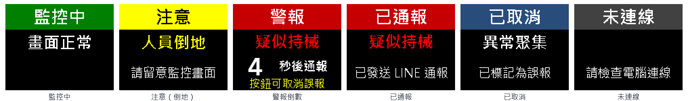

AI 守望：公共場所 AI 監控通報
用網路攝影機加上 AI 影像辨識，做出一套「發現危險 → 確認 → 通報」的監控系統：判斷有人手持危險物品、倒地、人群奔逃或異常聚集，給保全 5 秒按鈕取消誤報，再用 LINE 通報；現場警示盒用燈號、蜂鳴器與中文 TFT 顯示狀態。
01專題概要
背景與定位
2025 年 12 月，台北車站與捷運中山站發生隨機攻擊事件。這類事件中，發現得早、通報得快是減少傷亡的關鍵，但保全不可能同時盯著每一個監視畫面。市面上已有商用的 AI 監控系統；這個專題的重點不是做出能上線的產品，而是弄懂「AI 怎麼從畫面判斷危險」「怎麼避免一直誤報」，並用自己錄的演練影片與數據證明方法的效果和限制。
專題目標
- 用 YOLO 找出畫面中的人與危險物品（刀、球棒；上課用剪刀代替），判斷物品是不是「拿在手上」。
- 判斷四種事件：持械、人群奔逃（高風險）、人員倒地（中風險）、異常聚集（低風險），每種都要持續一段時間才成立。
- 分級通報：高風險先在現場警報並倒數 5 秒，保全可以按鈕取消誤報；沒人取消才發 LINE。每筆事件都截圖、寫入紀錄。
- 錄製演練影片並標記正確答案，計算偵測率、平均反應秒數、每 10 分鐘誤報次數，用參數實驗找出取捨。
- 用 ESP32 做成現場警示盒：三色燈、蜂鳴器、中文 TFT、保全取消鈕，斷線時要看得出來。
安全規定：演練「手持危險物品」一律使用剪刀或道具（刀尖朝下、不揮動），禁止攜帶真刀進教室；倒地要在軟墊上，奔跑要在空曠處、有老師在場。
法律規定：只能連線自己的或已取得授權的攝影機。未經同意連線別人的攝影機，觸犯《刑法》第 358 條妨害電腦使用罪。拍攝他人畫面要遵守《個人資料保護法》：取得同意、設置錄影告示、只用在安全用途、定期刪除。
做不到的事：手機上的「國家級警報」屬於細胞廣播（CBS），只有政府機關能發送，民間系統不能串接。本系統改用 LINE 通知保全與管理人員；它只能輔助判斷，不能取代保全、警察或 110。
02配置與架構
動作要求示意影片（117 秒，有聲音）
先看這支影片，了解每種情境下系統應該怎麼反應：左邊是監視畫面與偵測框，右上是現場警示盒（TFT、三色燈、蜂鳴器、取消鈕），右下是手機 LINE 與事件紀錄。人物動作是事先安排的模擬動畫，判斷規則、通報流程與警示盒畫面都和程式包相同。
字幕已燒錄在畫面下方；影片也可以用 13_make_scenario_video.bat 重新產生。
影片文字稿（每個時間點的畫面與聲音）
| 時間 | 情境與畫面 | 警示盒、LINE 與聲音 |
|---|---|---|
| 0:04 | 情境 0：平常的穿堂，只有人走動 | 綠燈恆亮；TFT「監控中／畫面正常」 |
| 0:12 | 情境 1：有人拿起剪刀，紅色「持械確認」進度條 0.6 秒跑滿 | 紅燈快閃、連續嗶聲；TFT「警報／疑似持械」，倒數 5 秒 |
| 0:17 | 倒數結束，沒有人取消 | LINE 收到「緊急通報」提示音；TFT「已通報」，紅燈恆亮、每 2 秒短嗶 |
| 0:26 | 情境 2：剪刀放在桌上，有人從桌旁走過，人框碰到剪刀被誤判 | 0:30 開始警報倒數 |
| 0:32 | 保全看畫面確認沒事，按下取消鈕 | 按鍵嗶一聲；TFT「已取消／已標記為誤報」，綠燈快閃；不發 LINE |
| 0:38 | 情境 3：剪刀只在鏡頭前晃一下、零星誤判 | 進度條沒跑滿，不警示 |
| 0:51 | 情境 4：有人倒地超過 3 秒 | 黃燈；TFT「注意／人員倒地」；直接發 LINE「監控通報」，不倒數 |
| 0:58 | 情境 5：蹲下綁鞋帶 1.5 秒 | 不到 3 秒，不警示 |
| 1:07 | 情境 6：兩組各 3 人快速跑過 | TFT「警報／人群奔逃」倒數 5 秒；1:12 發出 LINE 緊急通報 |
| 1:22 | 情境 8：16 人聚在一起超過 5 秒 | 黃燈、TFT「注意／異常聚集」；只寫入紀錄，不發 LINE |
| 1:27 | 情境 10：剪刀離鏡頭遠，信心度只有 0.27 | 低於門檻 0.35，漏報（說明調參的取捨） |
| 1:37 | 情境 11：手機被認成刀子，信心度 0.28 | 預設門檻下不警示；門檻調到 0.25 就會變成誤報 |
| 1:46 | 情境 12：警示盒的 USB 線被拔掉 | 1.5 秒後綠燈每 2 秒閃一下、TFT「未連線／請檢查電腦連線」 |
| 1:51 | 重點整理 | 規則摘要與安全提醒 |
分兩個階段做
- 寫演練腳本、取得同意
- 在教室或穿堂錄影
- 標記每件事的開始與結束
- 程式分析、算出偵測率與誤報
- 調整參數、改良規則
- 多路監控牆（攝影機或影片）
- ESP32 警示盒：燈號、蜂鳴器、TFT
- 保全取消鈕
- LINE 官方帳號通報
- 整合演練、量反應時間
現場演練每次都不一樣，沒辦法公平比較。錄好的影片可以反覆分析，改一個參數就能在同一批影片上比較成績；而且 YOLO 的偵測結果會存成紀錄檔，改門檻時只要「重播」規則，一秒就算完。
系統流程
現場配置（演練場地俯視）
03功能設計
動手寫程式或接線之前，先把「系統要做到什麼、怎麼算做到」寫清楚。下面是程式包已經實作的設計，報告中的「研究方法」可以直接引用；改良時也要回來更新這份規格。
3.1 功能清單與驗收標準
| 編號 | 功能 | 說明 | 對應程式 | 驗收標準 |
|---|---|---|---|---|
| F1 | 影像輸入 | USB 攝影機、RTSP 網路攝影機、公開快照、影片、圖片；每個來源一條背景執行緒，斷線自動重連 | sources.py | 兩路同時顯示；拔掉一台，那一格顯示「訊號中斷」，另一格照常 |
| F2 | 人與物品辨識 | YOLOv8n 找出人、刀、球棒、剪刀（練習用）；先用 0.2 收集，規則再篩選 | threat_rules.py、monitor.py | 1.5 公尺內張開的剪刀能被框出 |
| F3 | 手持判斷 | 物品框和「往外擴大 15% 的人框」重疊才算拿在手上；物品信心度要達 WEAPON_CONF（0.35） | ThreatAnalyzer | 遠處桌上的剪刀不觸發；拿在手上會觸發 |
| F4 | 持續確認 | 訊號要持續 WEAPON_SUSTAIN_SEC（0.6 秒）才成立；短暫漏抓 0.8 秒內不歸零 | SustainedFlag | 剪刀晃過 0.3 秒不觸發 |
| F5 | 人員倒地 | 人框寬度超過高度的 1.25 倍，持續 3 秒 | ThreatAnalyzer | 綁鞋帶 1.5 秒不觸發；躺 3 秒觸發 |
| F6 | 人群奔逃 | 3 人以上每秒移動超過 0.6 個畫面高，持續 1 秒 | _running_count | 3 人快步走不觸發；3 人奔跑觸發 |
| F7 | 異常聚集 | 人數達 15 人，持續 5 秒 | ThreatAnalyzer | 14 人不觸發 |
| F8 | 分級通報 | 高風險：警報並倒數 5 秒，沒取消才發 LINE；中風險：直接發 LINE；低風險：只記錄 | alerter.py | 規則測試「通報流程」全部通過 |
| F9 | 冷卻時間 | 同一台攝影機的同一種事件，60 秒內只通報一次 | alerter.py | 拿著剪刀不放，只收到一則 LINE |
| F10 | 存證紀錄 | 每筆事件截圖（依日期分資料夾）並寫入 events.csv（Excel 開啟不亂碼） | alerter.py | 紀錄有時間、攝影機、事件、等級、處置、截圖檔名 |
| F11 | LINE 推播 | Messaging API 廣播；每次開獨立行程、http.client、最多重試 3 次；金鑰只讀環境變數 | line_worker.py | 手機收到訊息；沒設金鑰時只提示、不當掉 |
| F12 | 監控牆 | 多路畫面、人數、物品信心度、事件名稱、高風險紅框閃爍、倒數提示 | monitor.py | 旁人看畫面就知道哪一路、發生什麼事 |
| F13 | 現場警示盒 | ESP32 三色燈、蜂鳴器、1.8 吋 TFT 中文：監控中、注意、警報倒數、已通報、已取消 | alarm_link.py、esp32_guard_alarm.ino | 五種狀態的燈號、聲音、畫面都能分辨 |
| F14 | 保全取消鈕 | 倒數中按下 → 所有待送的高風險通報標記為誤報，不發 LINE | esp32_guard_alarm.ino、monitor.py | 紀錄出現「保全取消(誤報)」；手機沒收到 |
| F15 | 失效提示 | 警示盒超過 1.5 秒沒收到電腦訊號 → 未連線 | esp32_guard_alarm.ino | 拔 USB 或關程式後，綠燈慢閃、TFT「未連線」 |
| F16 | 偵測紀錄與重播 | 影片的 YOLO 結果存成 _dets.csv；改門檻時只重播規則 | analyze_video.py、evaluate.py | 第二次評估同一支影片不必重跑 YOLO |
| F17 | 正確答案標記 | 播放影片，事件開始、結束各按一次數字鍵；可暫停、逐格、取消 | label_events.py | 答案存在影片旁邊；覆蓋前自動備份 .bak |
| F18 | 成效評估 | 偵測率、平均與最慢反應秒數、誤報、重複警示、每 10 分鐘誤報，分事件種類統計 | evaluate.py、batch_eval.py | 練習資料：6 件偵測到 5 件、誤報 1 次、平均反應 2.18 秒 |
| F19 | 參數實驗 | --set 暫時改門檻、--sweep 一次比較多個值，不修改程式檔 | batch_eval.py | 打錯設定名稱會停止並列出可用名稱 |
| F20 | 隱私保護 | 標註影片與截圖把人框整個打馬賽克，危險物品保持清楚 | analyze_video.py | output/ 裡認不出是誰 |
3.2 非功能需求
| 項目 | 目標 | 怎麼量 |
|---|---|---|
| 處理速度 | 即時監控每路每秒至少 5 張；兩路以上時由組員訂目標 | 監控牆順不順、分析結束印出的「每秒幾張」 |
| 反應時間 | 持械從拿起到警示盒亮紅燈，由組員訂目標（例如 1.5 秒內） | 手機慢動作錄影數影格 |
| 偵測率 | 由組員訂目標，例如「演練事件 80% 以上」 | 10_batch_evaluate.bat 成績表 |
| 誤報 | 由組員訂目標，例如「每 10 分鐘不超過 1 次」；誤報太多，保全會不再理會警報 | 成績表的「每10分鐘誤報」 |
| 失效安全 | 系統沒在運作時一定看得出來 | 拔攝影機、拔警示盒、關程式 |
| 人在迴路中 | 高風險通報前一定給人確認的機會 | 取消鈕測試 |
| 隱私 | 對外影像都已打馬賽克；原始影片不上傳；截圖定期刪除 | 發表前逐張檢查 |
3.3 通報狀態（警示盒顯示什麼）
| 狀態 | 什麼時候 | 燈號與蜂鳴器 | TFT |
|---|---|---|---|
| 監控中 | 沒有事件 | 綠燈恆亮 | 綠底「監控中」、畫面正常 |
| 注意 | 中、低風險事件（倒地、聚集）還在，或結束後 3 秒內 | 黃燈恆亮，不響 | 黃底「注意」、事件名稱、請留意監控畫面 |
| 警報倒數 | 高風險事件（持械、奔逃）進入 5 秒取消窗口 | 紅燈快閃、蜂鳴器 0.1 秒響停 | 紅底「警報」、事件名稱、大數字倒數、按鈕可取消誤報 |
| 已通報 | 倒數結束、LINE 已發出後 10 秒內 | 紅燈恆亮、每 2 秒短嗶 | 紅底「已通報」、已發送 LINE 通報 |
| 已取消 | 保全按取消鈕後 3 秒內 | 綠燈快閃 | 藍底「已取消」、已標記為誤報 |
| 未連線 | 1.5 秒沒收到電腦訊號 | 綠燈每 2 秒閃一下 | 灰底「未連線」、請檢查電腦連線 |
同時有好幾種狀態時，優先順序是：警報倒數 ＞ 已通報 ＞ 已取消 ＞ 注意 ＞ 監控中。顏色、文字、聲音一起變化，色弱或吵雜環境也能分辨。

3.4 介面規格
序列通訊（115200 bps，每行以換行結尾）
| 方向 | 內容 | 意義 |
|---|---|---|
| 電腦 → ESP32 | S2W4 | 每 0.2 秒一次：S＋狀態（0 監控中／1 注意／2 警報倒數／3 已通報／4 已取消）＋事件（W 持械、R 奔逃、F 倒地、C 聚集、N 無）＋倒數秒數（0～9） |
| ESP32 → 電腦 | I,ready | 開機完成 |
| ESP32 → 電腦 | K | 保全按下取消鈕 |
正確答案 影片名_truth.csv：kind（持械、倒地、奔逃、聚集）、start、end（秒）、note。
偵測紀錄 影片名_dets.csv：t（秒）、frame_h、frame_w、cls（0 人、43 刀、34 球棒、76 剪刀；什麼都沒找到時為 −1）、conf、x1,y1,x2,y2。
警示片段 logs/影片名_events.csv：start、end、kind、level、detail。同一種警示中斷超過 1 秒才算結束。
事件紀錄 system/events/events.csv：時間、攝影機、事件、等級、說明、處置（LINE通報／二級通報(LINE)／保全取消(誤報)／僅記錄）、截圖。
3.5 例外處理
| 狀況 | 系統反應 |
|---|---|
| 攝影機打不開或中途斷線 | 那一格顯示「訊號中斷」，3 秒後自動重連；其他來源照常 |
| 沒裝 pyserial 或找不到 ESP32 | 提示原因，不使用警示盒，監控牆照常（可用鍵盤 C 取消） |
| 序列埠中途斷線 | 提示寫入失敗；警示盒 1.5 秒後顯示未連線 |
| 沒有設定 LINE 金鑰、網路卡住 | 提示設定方式；推播在獨立行程中重試 3 次，不會卡住畫面 |
| 程式結束 | 把倒數中的事件處理完，送出「監控中」後關閉 |
| 答案檔不存在、是空的或事件名稱打錯 | evaluate.py 說明要先標記，或列出可以用的名稱 |
| 資料夾裡的影片沒有答案檔 | batch_eval.py 列出並跳過，不中斷 |
--set 打錯設定名稱 | 停止並列出所有可調整的門檻，避免實驗白跑 |
| 標記時不小心覆蓋答案 | 舊檔自動改名為 .bak；重新開啟同一支影片會接續之前的標記 |
| 存截圖的路徑有中文 | 用 cv2.imencode(...).tofile() 存檔，不會失敗 |
3.6 功能測試對照
| 測試 | 對應功能 | 方法 | 通過標準 |
|---|---|---|---|
| T1 | F2～F8、F18 | 執行 0_demo_practice.bat | 規則測試 47 項通過；練習資料 6 件偵測到 5 件、誤報 1 次、重複 1 次、平均反應 2.18 秒 |
| T2 | F4、F19 | 執行 11_param_experiment.bat | WEAPON_SUSTAIN_SEC 2 秒時誤報 0 次；WEAPON_CONF 0.25 時 6 件全抓到但誤報 2 次 |
| T3 | F2、F3 | 3_weapon.bat：剪刀放桌上（人離開）、再拿起來 | 橘框 → 紅框「手持!」 |
| T4 | F4 | 4_sustain.bat：剪刀快速晃過鏡頭 10 次 | 進度條沒跑滿就不觸發 |
| T5 | F8～F10 | 監控牆觸發持械兩次（間隔 60 秒以上），一次不取消、一次按 C | events.csv 有「二級通報(LINE)」與「保全取消(誤報)」各一筆，截圖齊全 |
| T6 | F11 | 6_line_test.bat；再故意貼錯金鑰 | 手機收到訊息；錯誤金鑰顯示 401、程式不當掉 |
| T7 | F1、F12 | 監控牆接攝影機＋影片，中途拔掉 USB 攝影機再接回 | 該格顯示「訊號中斷」後恢復，另一格不受影響 |
| T8 | F13、F15 | 執行 12_test_alarm_box.bat，最後拔掉 USB | 六種畫面、燈號、聲音都正確 |
| T9 | F14 | 監控牆觸發持械，倒數中按警示盒取消鈕 | TFT「已取消」、不發 LINE、紀錄為保全取消 |
| T10 | F5～F7 | 演練影片中倒地、奔逃、聚集各做一次，拖到 9_analyze_video.bat | 三種事件都有對應的警示片段 |
| T11 | F16～F18 | 標記兩支演練影片後執行 10_batch_evaluate.bat 兩次 | 成績表有兩支影片、合計與各事件；第二次不再跑 YOLO |
| T12 | F20 | 逐張檢查 output/ 的標註影片與截圖 | 認不出是誰；沒被偵測到的人另外處理後才對外使用 |
04器材清單
價格為參考價，依實際採購為準。只做第一階段的話，只要筆電與一支 USB 攝影機。
| 項目 | 建議規格 | 數量 | 參考價 |
|---|---|---|---|
| 第一階段：演練與分析 | |||
| 筆記型電腦 | Windows 10／11、Intel i5 第 8 代或同級以上、8 GB 記憶體 | 1 | 學校既有 |
| USB 網路攝影機 | 1080p、廣角；多路監控要 2 支 | 1～2 | 每支 600～1,200 元 |
| 三腳架或夾具 | 能把鏡頭架到 2 公尺以上（例如燈架、書櫃頂端夾具） | 1～2 | 每個 300～800 元 |
| USB 延長線 | 主動式 5 公尺，鏡頭離筆電較遠時使用 | 1 | 200～400 元 |
| 演練道具 | 圓頭剪刀、泡棉或紙板做的道具刀、軟墊（體育組借用） | 1 組 | 50～200 元 |
| 手機 | 安裝 LINE，加官方帳號為好友 | 1 | 組員既有 |
| 第二階段：現場警示盒 | |||
| ESP32 開發板 | ESP32 DevKit（USB 轉序列晶片 CP2102 或 CH340） | 1 | 200～350 元 |
| LED 與電阻 | 綠、黃、紅 LED 各 1 顆，220Ω 電阻 3 個 | 1 組 | 約 30 元 |
| 主動式蜂鳴器模組 | 3.3V 可用、高電位觸發 | 1 | 30～60 元 |
| 取消按鈕 | 自復式大型按鈕（24 mm 以上，好按、不容易誤觸） | 1 | 50～150 元 |
| ST7735 1.8 吋 TFT | 160×128、SPI 介面（標示 1.8" TFT SPI） | 1 | 150～300 元 |
| 麵包板、杜邦線 | — | 1 組 | 100～200 元 |
| 外殼 | 壓克力、紙盒或 3D 列印，按鈕與螢幕外露 | 1 | 100～300 元 |
| USB 傳輸線 | 可傳資料（不是只能充電的線） | 1 | 50～100 元 |
| 選購 | |||
| 網路攝影機（RTSP） | 支援 RTSP 的家用攝影機，只能用自己的或已授權的 | 1 | 800～1,200 元 |
05警示盒接線
所有元件都使用 ESP32 的 3.3V，由筆電 USB 供電。
| 元件 | 接法 | ESP32 腳位 | 用途 |
|---|---|---|---|
| 綠色 LED | 長腳 → 220Ω → GPIO；短腳 → GND | GPIO25 | 恆亮＝監控中；快閃＝已取消；每 2 秒閃一下＝未連線 |
| 黃色 LED | 同上 | GPIO26 | 恆亮＝注意 |
| 紅色 LED | 同上 | GPIO27 | 快閃＝警報倒數；恆亮＝已通報 |
| 主動式蜂鳴器模組 | VCC → 3V3、GND → GND、I/O → GPIO | GPIO14 | HIGH＝響 |
| 取消按鈕 | 一腳 → GPIO，另一腳 → GND（使用內建上拉電阻） | GPIO4 | 按下送出 K，並短嗶一聲 |
| ST7735 TFT | SCK、SDA（MOSI）、CS、A0（DC）、RST | GPIO18、23、5、21、22 | 狀態、事件、倒數秒數 |
| VCC、GND、LED（背光） | 3V3、GND、3V3 |
電腦每 0.2 秒送一次狀態，警示盒超過 1.5 秒沒收到就顯示未連線。警示裝置最怕「壞掉了卻看起來正常」，保全以為一切平安，其實系統早就停了。
接線注意
- 按鈕不要接到 3V3，否則按下時會短路；接 GPIO4 與 GND 即可。
- 蜂鳴器一直響，代表買到「低電位觸發」的模組：換模組，或請 AI 助手把程式裡蜂鳴器的 HIGH／LOW 反過來。
- TFT 顏色或邊緣不對時，把程式裡的
INITR_BLACKTAB改成INITR_GREENTAB或INITR_REDTAB。 - 想改 TFT 上的中文，修改
make_tft_labels.py的LABELS，執行後再重新上傳。
韌體：system/esp32_guard_alarm/esp32_guard_alarm.ino
// AI 守望：現場警示盒（ESP32）——三色燈、蜂鳴器、TFT 文字、保全取消鈕
//
// 電腦傳來的指令（每行一個，以換行結尾）：
// S<狀態><事件><秒數> 例：S2W4
// 狀態：0 監控中／1 注意／2 警報倒數／3 已通報／4 已取消
// 事件：W 持械／R 奔逃／F 倒地／C 聚集／N 無
// 秒數：警報倒數剩幾秒（0～9）
// 傳給電腦的訊息：
// I,ready 開機完成
// K 保全按下取消鈕（電腦會把倒數中的警報標記為誤報）
// 電腦每 0.2 秒送一次狀態；超過 OFFLINE_MS 沒收到 → 未連線（綠燈慢閃、TFT 顯示未連線）
//
// 開發板選「ESP32 Dev Module」
// 需要的程式庫（Arduino IDE 程式庫管理員）：Adafruit ST7735 and ST7789 Library、Adafruit GFX Library
//
// 接線：
// 綠／黃／紅 LED：GPIO25／26／27（各串 220Ω 到 GND）；主動式蜂鳴器模組 I/O：GPIO14
// 取消按鈕：一腳接 GPIO4，另一腳接 GND（使用內建上拉電阻，不必另外接電阻）
// ST7735 1.8 吋 TFT：SCK→GPIO18、SDA(MOSI)→GPIO23、CS→GPIO5、A0(DC)→GPIO21、RST→GPIO22、
// VCC→3V3、GND→GND、LED(背光)→3V3
#include <Adafruit_GFX.h>
#include <Adafruit_ST7735.h>
#include <SPI.h>
#include "tft_labels.h"
const int PIN_GREEN = 25;
const int PIN_YELLOW = 26;
const int PIN_RED = 27;
const int PIN_BUZZER = 14; // 主動式蜂鳴器模組，HIGH＝響
const int PIN_BUTTON = 4; // 按下＝LOW
const int TFT_CS = 5;
const int TFT_DC = 21;
const int TFT_RST = 22;
const unsigned long OFFLINE_MS = 1500;
const unsigned long DEBOUNCE_MS = 50;
const unsigned long CLICK_BEEP_MS = 60;
// 顏色（RGB565）
const uint16_t C_BLACK = 0x0000;
const uint16_t C_WHITE = 0xFFFF;
const uint16_t C_GREEN = 0x0400;
const uint16_t C_YELLOW = 0xFFE0;
const uint16_t C_RED = 0xC000; // 色塊（配白字）
const uint16_t C_RED_TX = 0xF800; // 黑底上的紅字
const uint16_t C_BLUE = 0x2A6F; // 已取消
const uint16_t C_GRAY = 0x4208;
Adafruit_ST7735 tft(TFT_CS, TFT_DC, TFT_RST);
int state = -1; // -1＝未連線
char kind = 'N';
int seconds = 0;
unsigned long lastMsg = 0;
String line;
// 按鈕
bool lastRaw = HIGH;
bool stable = HIGH;
unsigned long rawChanged = 0;
unsigned long clickBeepUntil = 0;
// 畫面上目前顯示的內容（有變才重畫，避免閃爍）
int shownState = -2;
char shownKind = '?';
int shownSeconds = -1;
// ---------- TFT ----------
void drawLabel(const Label &lb, int cx, int top, int bandH, uint16_t fg, uint16_t bg) {
int x = cx - lb.w / 2;
int y = top + (bandH - lb.h) / 2;
tft.drawBitmap(x, y, lb.data, lb.w, lb.h, fg, bg);
}
const Label &kindLabel(char k) {
switch (k) {
case 'W': return LBL_KW;
case 'R': return LBL_KR;
case 'F': return LBL_KF;
case 'C': return LBL_KC;
default: return LBL_KN;
}
}
void drawScreen() {
int w = tft.width(); // 160
bool stateChanged = state != shownState;
// 上方色塊：狀態
if (stateChanged) {
uint16_t bg = C_GRAY, fg = C_WHITE;
const Label *lb = &LBL_OFF;
switch (state) {
case 0: bg = C_GREEN; lb = &LBL_S0; break;
case 1: bg = C_YELLOW; fg = C_BLACK; lb = &LBL_S1; break;
case 2: bg = C_RED; lb = &LBL_S2; break;
case 3: bg = C_RED; lb = &LBL_S3; break;
case 4: bg = C_BLUE; lb = &LBL_S4; break;
}
tft.fillRect(0, 0, w, 38, bg);
drawLabel(*lb, w / 2, 0, 38, fg, bg);
}
// 中間：事件種類
char k = (state > 0) ? kind : 'N';
if (stateChanged || k != shownKind) {
tft.fillRect(0, 40, w, 34, C_BLACK);
uint16_t fg = C_WHITE;
if (state == 1) fg = C_YELLOW;
if (state == 2 || state == 3) fg = C_RED_TX;
if (state >= 0) drawLabel(kindLabel(k), w / 2, 40, 34, fg, C_BLACK);
shownKind = k;
}
// 下方：依狀態顯示說明；警報倒數時顯示大數字
if (stateChanged) {
tft.fillRect(0, 76, w, 52, C_BLACK);
switch (state) {
case -1: drawLabel(LBL_CHECK, w / 2, 76, 52, C_WHITE, C_BLACK); break;
case 1: drawLabel(LBL_WATCH, w / 2, 76, 52, C_WHITE, C_BLACK); break;
case 2:
drawLabel(LBL_AFTER, 104, 78, 30, C_WHITE, C_BLACK);
drawLabel(LBL_PRESS, w / 2, 108, 20, C_YELLOW, C_BLACK);
break;
case 3: drawLabel(LBL_SENT, w / 2, 76, 52, C_WHITE, C_BLACK); break;
case 4: drawLabel(LBL_FALSE, w / 2, 76, 52, C_WHITE, C_BLACK); break;
}
shownSeconds = -1;
}
if (state == 2 && seconds != shownSeconds) {
tft.setTextSize(4); // 24×32 像素的數字
tft.setTextColor(C_WHITE, C_BLACK); // 帶背景色，覆蓋舊數字不閃爍
tft.setCursor(22, 78);
tft.print(seconds);
shownSeconds = seconds;
}
shownState = state;
}
// ---------- 燈號與蜂鳴器 ----------
void setOutputs(bool g, bool y, bool r, bool buzz) {
digitalWrite(PIN_GREEN, g);
digitalWrite(PIN_YELLOW, y);
digitalWrite(PIN_RED, r);
digitalWrite(PIN_BUZZER, buzz || millis() < clickBeepUntil);
}
// ---------- 取消按鈕 ----------
void readButton() {
unsigned long now = millis();
bool raw = digitalRead(PIN_BUTTON);
if (raw != lastRaw) {
lastRaw = raw;
rawChanged = now;
}
if (now - rawChanged > DEBOUNCE_MS && raw != stable) {
stable = raw;
if (stable == LOW) { // 剛按下
Serial.println("K");
clickBeepUntil = now + CLICK_BEEP_MS;
}
}
}
// ---------- 指令 ----------
void handleLine(const String &s) {
if (s.length() == 4 && s[0] == 'S' && s[1] >= '0' && s[1] <= '4' && isDigit(s[3])) {
state = s[1] - '0';
kind = s[2];
seconds = s[3] - '0';
lastMsg = millis();
}
}
void readSerial() {
while (Serial.available()) {
char c = Serial.read();
if (c == '\n') {
handleLine(line);
line = "";
} else if (c != '\r' && line.length() < 8) {
line += c;
}
}
}
void setup() {
Serial.begin(115200);
pinMode(PIN_GREEN, OUTPUT);
pinMode(PIN_YELLOW, OUTPUT);
pinMode(PIN_RED, OUTPUT);
pinMode(PIN_BUZZER, OUTPUT);
pinMode(PIN_BUTTON, INPUT_PULLUP);
tft.initR(INITR_BLACKTAB); // 顏色或邊緣不對時，改成 INITR_GREENTAB 或 INITR_REDTAB
tft.setRotation(1); // 橫向 160×128
tft.fillScreen(C_BLACK);
// 開機自我測試：三個燈與蜂鳴器依序動作
setOutputs(true, false, false, false); delay(250);
setOutputs(false, true, false, false); delay(250);
setOutputs(false, false, true, true); delay(150);
setOutputs(false, false, false, false);
drawScreen();
Serial.println("I,ready");
}
void loop() {
readSerial();
readButton();
unsigned long now = millis();
if (state >= 0 && now - lastMsg > OFFLINE_MS) {
state = -1;
}
switch (state) {
case 0: // 監控中：綠燈恆亮
setOutputs(true, false, false, false);
break;
case 1: // 注意：黃燈恆亮，不響（中、低風險事件已直接通報或記錄）
setOutputs(false, true, false, false);
break;
case 2: { // 警報倒數：紅燈快閃，蜂鳴器 0.1 秒響、0.1 秒停
bool on = (now / 100) % 2;
setOutputs(false, false, on, on);
break;
}
case 3: // 已通報：紅燈恆亮，每 2 秒短嗶提醒現場
setOutputs(false, false, true, (now % 2000) < 80);
break;
case 4: // 已取消：綠燈快閃
setOutputs((now / 250) % 2, false, false, false);
break;
default: // 未連線：綠燈每 2 秒閃一下
setOutputs((now % 2000) < 150, false, false, false);
}
drawScreen();
delay(10);
}06軟體與安裝
| 軟體 | 用途 | 取得方式 |
|---|---|---|
| Python 3.10 以上 | 所有程式 | python.org，安裝時勾選「Add python.exe to PATH」 |
| ultralytics、opencv-python、pillow、numpy、pyserial | YOLO 辨識、影像處理、中文字、與 ESP32 通訊 | pip install -r requirements.txt |
| Arduino IDE ＋ ESP32 開發板套件 | 上傳 esp32_guard_alarm.ino，開發板選「ESP32 Dev Module」 | arduino.cc |
| Adafruit ST7735 and ST7789 Library、Adafruit GFX Library | TFT 顯示 | Arduino IDE 程式庫管理員 |
| LINE 官方帳號（Messaging API） | 通報訊息 | 見關卡 L6 |
| ffmpeg（教師選用） | 重新產生示意影片 | winget install Gyan.FFmpeg |
| Google Antigravity／Claude Code | AI 程式助手（擇一） | Antigravity 免費；Claude Code 需 Claude 付費方案 |
- 下載本頁上方的程式包，解壓縮後進入
ai_guardian_starter資料夾，在資料夾裡開啟命令提示字元（檔案總管網址列輸入cmd按 Enter）。 - 建立虛擬環境並安裝套件（第一次會下載 PyTorch，約 5～10 分鐘）：
py -m venv .venv
.venv\Scripts\activate
pip install -r requirements.txt命令列前面出現 (.venv) 代表虛擬環境已啟用。之後每次開新的命令視窗，都要先執行 .venv\Scripts\activate，再在同一個視窗執行 bat 檔（或直接把套件裝在全域的 Python）。第一次執行時，程式會自動下載 YOLO 模型檔 yolov8n.pt（約 6 MB）。
安裝完先執行 0_demo_practice.bat：它不需要攝影機，會先跑 47 項規則測試，再產生一段 3 分鐘的模擬演練資料並算出成績。看到「6 件偵測到 5 件、誤報 1 次」就代表環境沒問題。
07演練錄影
只在校內、取得同意後演練：場地要經學校同意，演練時張貼「AI 監控演練錄影中」告示；參與的同學（未成年要有家長）簽同意書；不錄到沒有同意的人。絕對不要在車站、捷運等公共場所演練或測試，以免引起恐慌。
道具與動作：只用剪刀、泡棉或紙板道具；不做攻擊、揮舞、追逐的動作；倒地在軟墊上、慢慢躺下；奔跑在空曠處、同方向，老師在場。
鏡頭架設
- 高度 2～2.5 公尺、斜向下 20～30°，拍攝 3～6 公尺範圍（見圖 2）。
- 解析度 1080p、30fps；每段 2～5 分鐘，檔名寫上日期、場地、光線，例如
0917_穿堂_白天_1.mp4，放進程式包的videos/。 - 不同光線（白天、開燈、背光）、不同距離都要錄，才能比較方法在哪裡最弱。
演練腳本（每段影片照腳本做，事後才好標記）
| 情境 | 動作要求 | 要不要標記 | 系統應該 |
|---|---|---|---|
| 持械 | 剪刀張開、側面朝鏡頭，舉起後拿著 3～5 秒再放下 | 持械（舉起 → 放下） | 警報倒數 |
| 桌上物品 | 剪刀放桌上，人離開；再從桌旁走過 | 不標記 | 不警示（走過時可能誤報，要記錄） |
| 快速晃過 | 剪刀在鏡頭前晃一下就收起來 | 不標記 | 不警示 |
| 倒地 | 在軟墊上慢慢躺下 5～8 秒再起來 | 倒地（躺下 → 起來） | 注意＋LINE |
| 蹲下 | 蹲下綁鞋帶、撿東西 1～2 秒 | 不標記 | 不警示 |
| 奔逃 | 3 人以上同方向跑過鏡頭前（空曠處） | 奔逃（開始跑 → 跑出畫面） | 警報倒數 |
| 快走 | 3 人快步走過 | 不標記 | 不警示 |
| 聚集 | 15 人以上走進畫面、停留 10 秒再散開（可和班級合作） | 聚集（達 15 人 → 散開） | 注意（只記錄） |
| 容易誤判的物品 | 拿手機、雨傘、長尺、掃把 | 不標記 | 不警示（誤報要記錄原因） |
每種要標記的事件至少做 5 次、全部加起來至少 30 次，數據才有參考價值。每次演練在紙本上記下順序與大概時間，標記時比較不會漏。
影片裡有同學的臉：原始影片不上傳網路，存在學校指定的位置，專題結束後刪除；對外只用 9_analyze_video.bat 產生的馬賽克影片與截圖。
0812 週製作流程
| 週次 | 工作內容 | 要交出的成果 |
|---|---|---|
| 第 1 週 | 訪談學校警衛或教官，了解巡邏、監視與通報流程；比較市售 AI 監控的功能與限制（討論事件時聚焦「如何更早發現、更快應變」） | 訪談紀錄、產品比較表 |
| 第 2 週 | 安裝環境，執行 0_demo_practice.bat；讀懂 threat_rules.py 最上方的門檻；分工 | 練習資料的成績表截圖 |
| 第 3 週 | 程式關卡 L1～L3 | 關卡檢核表 |
| 第 4 週 | 程式關卡 L4～L6；申請 LINE 官方帳號（各組一個）；課堂小實驗 | LINE 測試截圖、小實驗表格 |
| 第 5 週 | 寫演練計畫：場地、腳本、安全措施、同意書，取得老師與學校同意；試拍 1 段 | 演練計畫書、試拍影片 |
| 第 6 週 | 正式錄製演練影片，涵蓋不同光線、距離與容易誤判的情境 | 影片清單（日期、場地、光線、長度、腳本） |
| 第 7 週 | 把影片拖到 8_label_video.bat 標記；兩人各自標記再比對 | 每支影片的 _truth.csv、標記差異紀錄 |
| 第 8 週 | 執行 10_batch_evaluate.bat 得到基準成績；用 9_analyze_video.bat 看截圖，把漏報與誤報的原因分類 | 基準成績表、原因分類表 |
| 第 9 週 | 用 11_param_experiment.bat 或 --set 調整門檻，或改良規則，每次只改一項，在同一批影片上比較 | 參數比較表 |
| 第 10 週 | 警示盒接線、上傳韌體、12_test_alarm_box.bat；L7 監控牆整合 | 接線照片、狀態對照表 |
| 第 11 週 | 整合演練：一位同學扮演保全，只看監控牆與警示盒決定要不要取消；慢動作錄影量反應時間；請同學回饋 | 反應時間紀錄、使用者回饋 |
| 第 12 週 | 製作成果影片（只用馬賽克後的畫面）；（選做）延伸挑戰 | 成果影片 |
| 第 13 週以後 | 撰寫書面報告、練習上台報告 | 書面報告、簡報 |
09運作原理
步驟一：YOLO 找出人與物品
YOLO 看一次畫面就能同時找出多個物體，每個結果有類別、信心度（0～1）與框的座標。程式先用較低的門檻 0.2 把可能的結果都收集起來，再由規則決定要不要採用：人要達 0.3、危險物品要達 0.35。這樣改門檻做實驗時，不必重新辨識。
步驟二：「拿在手上」怎麼判斷
這個方法很簡單，但也有明顯的缺點：有人從放著剪刀的桌子旁走過，人框碰到剪刀框，也會被當成手持——練習資料裡唯一的誤報就是這樣來的。延伸挑戰可以加上「物品要在上半身高度」「物品要跟著人移動」之類的條件。
步驟三：持續才算數
AI 偶爾會在某一格認錯，如果一出現就通報，保全很快就會不理警報。所以每種訊號都要持續一段時間才成立（持械 0.6 秒、奔逃 1 秒、倒地 3 秒、聚集 5 秒）；訊號短暫消失 0.8 秒內不歸零，但這段時間不算進持續秒數，只出現 0.3 秒的剪刀永遠不會觸發。
步驟四：奔逃與倒地
奔逃：把這一次每個人框的中心，和上一次最近的中心配對，算出移動距離。距離除以畫面高度、再除以經過的秒數，就是「每秒移動幾個畫面高」。用畫面高度當單位，換了解析度也能用同一個門檻。超過 0.6 的人達 3 人、持續 1 秒，就是奔逃。
倒地：站著的人框是瘦高的，躺下時變成寬扁的。框寬超過框高的 1.25 倍、持續 3 秒，就判斷為倒地；蹲下綁鞋帶也會讓框變寬，但通常不到 3 秒。
步驟五：分級通報與取消窗口
| 事件 | 判斷 | 風險 | 系統反應 |
|---|---|---|---|
| 持械 | 危險物品框和人框重疊，持續 0.6 秒 | 高 | 警示盒警報並倒數 5 秒；沒取消就發 LINE 緊急通報 |
| 人群奔逃 | 3 人以上快速移動，持續 1 秒 | 高 | 同上 |
| 人員倒地 | 人框寬比高大，持續 3 秒 | 中 | 警示盒「注意」，直接發 LINE |
| 異常聚集 | 人數達 15 人，持續 5 秒 | 低 | 警示盒「注意」，只記錄 |
「取消窗口」是 AI 系統常見的人在迴路中（human-in-the-loop）設計：AI 負責「多看一眼」，最後由人確認。窗口太短，保全來不及看；太長，真的出事時通報會變慢——這也是可以做實驗、寫進報告的取捨。
步驟六：用數據評估
- 錄影照腳本演練
- 標記8_label_video
- 分析9_analyze_video
- 成績10_batch_evaluate
- 改良11_param_experiment
比對規則：同種類的警示在「標記開始前 0.5 秒」到「標記結束後 1 秒」之間出現，就算偵測到，反應秒數＝警示時間－標記開始；沒對應到任何標記的警示算誤報；同一件事警示兩次以上算重複警示。
方法的限制（要寫進報告）：COCO 模型沒有槍、火焰、煙霧；小模型在遠處、背光、物品被手遮住時很難認出刀具；「手持」只看框有沒有重疊；倒地用長寬比，鏡頭角度會影響；奔逃的最近鄰配對在人多時容易配錯；演練動作和真實事件不同，數據只能說明「在演練條件下」的表現。
10程式學習關卡 L1～L7
正式做專題之前，先用七個關卡把系統的每個零件親手做一次。每關都能單獨執行，L7 把它們接成完整系統。關卡 1～5 的 bat：雙擊用 0 號攝影機，把影片檔拖到 bat 上就改用影片。
| 關卡 | 內容 | 啟動 | 時間 |
|---|---|---|---|
| L1 | 打開攝影機 | 1_camera.bat | 20 分鐘 |
| L2 | 用 YOLO 找出人 | 2_people.bat | 30 分鐘 |
| L3 | 判斷「手持」危險物品 | 3_weapon.bat | 40 分鐘 |
| L4 | 防誤報：持續才算數 | 4_sustain.bat | 30 分鐘 |
| L5 | 通報流程：存證與取消 | 5_alert.bat | 40 分鐘 |
| L6 | LINE 推播 | 6_line_test.bat | 40 分鐘 |
| L7 | 多路監控牆＋警示盒 | 7_monitor_wall.bat | 2 節 |
L1打開攝影機
- 目標
- 在視窗中看到攝影機的即時畫面，並顯示解析度。
- 時間
- 約 20 分鐘
python step1_camera.py重點觀念
- 影片其實是一張一張的圖片（幀）。
cap.read()每呼叫一次，就讀進一張。 - 每張畫面是一個 NumPy 陣列，形狀是（高, 寬, 3），3 代表 B、G、R 三個顏色——OpenCV 的順序和一般的 RGB 相反。
cv2.putText不能寫中文，所以用tw_text.py裡的put_chinese_text()，透過 PIL 套件和微軟正黑體來畫字。
完整程式：step1_camera.py
"""關卡1:打開攝影機,顯示即時畫面。 按 q 離開。
用法:python step1_camera.py (0 號攝影機)
python step1_camera.py 1 (1 號攝影機)
python step1_camera.py test.mp4
"""
import sys
import cv2
from tw_text import open_source, put_chinese_text, read_frame
cap = open_source(sys.argv)
if not cap.isOpened():
print("打不開影像來源:確認攝影機有接上、沒被其他程式(Teams、LINE)占用")
sys.exit()
while True:
ok, frame = read_frame(cap)
if not ok:
break
h, w = frame.shape[:2]
frame = put_chinese_text(frame, f"解析度 {w}x{h}", (10, 10))
cv2.imshow("step1 - press q", frame)
if cv2.waitKey(1) & 0xFF == ord("q"):
break
cap.release()
cv2.destroyAllWindows()小工具：tw_text.py
"""共用小工具:在 OpenCV 畫面上寫中文(cv2.putText 不支援中文)。"""
import cv2
import numpy as np
from PIL import Image, ImageDraw, ImageFont
FONT = ImageFont.truetype("C:/Windows/Fonts/msjh.ttc", 24) # 微軟正黑體
def put_chinese_text(frame, text, xy, bgr=(255, 255, 255)):
img = Image.fromarray(cv2.cvtColor(frame, cv2.COLOR_BGR2RGB))
ImageDraw.Draw(img).text(xy, text, font=FONT, fill=bgr[::-1],
stroke_width=2, stroke_fill=(0, 0, 0))
return cv2.cvtColor(np.array(img), cv2.COLOR_RGB2BGR)
def open_source(argv):
"""沒給參數就開 0 號攝影機;給數字開對應攝影機;給檔名開影片。"""
src = argv[1] if len(argv) > 1 else "0"
if src.isdigit():
return cv2.VideoCapture(int(src), cv2.CAP_DSHOW)
return cv2.VideoCapture(src)
def read_frame(cap, max_width=960):
"""讀一張畫面,太大就等比例縮小(高解析度網路攝影機字會太小、運算也慢)。"""
ok, frame = cap.read()
if ok and frame.shape[1] > max_width:
scale = max_width / frame.shape[1]
frame = cv2.resize(frame, None, fx=scale, fy=scale)
return ok, frame檢核點
time.strftime("%H:%M:%S")）。L2用 AI 找出人
- 目標
- 用 YOLO 把畫面中的人框起來，並即時顯示人數。
- 時間
- 約 30 分鐘
python step2_people.py重點觀念
- YOLO（You Only Look Once）是一種物件偵測模型，看一次畫面就能同時找出多個物體。我們用的模型是以 COCO 資料集訓練的，認得 80 種物體，「人」是第 0 類。
- 每個偵測結果有三個資料：類別（
box.cls）、信心度（box.conf，0～1）、框的座標（box.xyxy，左上角 x1,y1 和右下角 x2,y2）。 CONF是信心度門檻：調高會比較嚴格（漏抓變多），調低會比較寬鬆（誤抓變多）。imgsz=416是把畫面縮小後再辨識，數字越小越快、但遠處的小東西越難認出來。
完整程式：step2_people.py
"""關卡2:用 YOLO 找出畫面中的人,框起來並顯示人數。 按 q 離開。"""
import sys
import cv2
from ultralytics import YOLO
from tw_text import open_source, put_chinese_text, read_frame
PERSON = 0 # COCO 資料集中「人」的類別編號
CONF = 0.4 # 信心度門檻:越高越嚴格
model = YOLO("yolov8n.pt")
cap = open_source(sys.argv)
while True:
ok, frame = read_frame(cap)
if not ok:
break
result = model.predict(frame, classes=[PERSON], conf=CONF, imgsz=416, verbose=False)[0]
for box in result.boxes:
x1, y1, x2, y2 = map(int, box.xyxy[0])
cv2.rectangle(frame, (x1, y1), (x2, y2), (0, 200, 0), 2)
count = len(result.boxes)
frame = put_chinese_text(frame, f"人數:{count}", (10, 10), (0, 255, 0))
cv2.imshow("step2 - press q", frame)
if cv2.waitKey(1) & 0xFF == ord("q"):
break
cap.release()
cv2.destroyAllWindows()檢核點
CONF 改成 0.2 和 0.7，各觀察 1 分鐘，比較誤判和漏抓的情況。L3判斷「手持」危險物品
- 目標
- 偵測剪刀、刀子、球棒，並分辨它是「拿在手上」還是「放在桌上」。
- 時間
- 約 40 分鐘
python step3_weapon.py重點觀念：兩個框有沒有重疊
桌上放一把剪刀不危險，有人拿著才需要注意。程式的判斷方式是：危險物品的框如果和人的框重疊，就當作拿在手上。手伸出去時，物品常常在人的框外面一點，所以先把人的框往外擴大 15%（expand）再比較。
def overlap(a, b):
# 兩個框「沒有重疊」只有四種情況：a 在 b 的左、右、上、下
return not (a[2] < b[0] or b[2] < a[0] or a[3] < b[1] or b[3] < a[1])框的顏色：紅色＝手持，橘色＝附近沒人，綠色＝人。
完整程式：step3_weapon.py
"""關卡3:偵測危險物品,並判斷是不是「拿在人手上」。 按 q 離開。
練習時請用「剪刀」代替刀械(COCO 類別 76),安全又容易取得。
"""
import sys
import cv2
from ultralytics import YOLO
from tw_text import open_source, put_chinese_text, read_frame
PERSON = 0
WEAPONS = {43: "刀子", 34: "球棒", 76: "剪刀"}
CONF = 0.3
def expand(box, ratio):
"""把框往外擴大一點(手拿東西時,物品常常在人的框邊緣外)。"""
x1, y1, x2, y2 = box
dw, dh = (x2 - x1) * ratio, (y2 - y1) * ratio
return x1 - dw, y1 - dh, x2 + dw, y2 + dh
def overlap(a, b):
"""兩個框有沒有重疊。"""
return not (a[2] < b[0] or b[2] < a[0] or a[3] < b[1] or b[3] < a[1])
model = YOLO("yolov8n.pt")
cap = open_source(sys.argv)
while True:
ok, frame = read_frame(cap)
if not ok:
break
result = model.predict(frame, classes=[PERSON, *WEAPONS], conf=CONF,
imgsz=416, verbose=False)[0]
people, weapons = [], []
for box in result.boxes:
cls = int(box.cls[0])
xyxy = tuple(box.xyxy[0].tolist())
(people if cls == PERSON else weapons).append((cls, xyxy))
held = False
for cls, w in weapons:
in_hand = any(overlap(w, expand(p, 0.15)) for _, p in people)
held = held or in_hand
color = (0, 0, 255) if in_hand else (0, 200, 255)
x1, y1, x2, y2 = map(int, w)
cv2.rectangle(frame, (x1, y1), (x2, y2), color, 3)
label = WEAPONS[cls] + ("(手持!)" if in_hand else "")
frame = put_chinese_text(frame, label, (x1, max(y1 - 30, 0)), color)
for _, p in people:
x1, y1, x2, y2 = map(int, p)
cv2.rectangle(frame, (x1, y1), (x2, y2), (0, 200, 0), 2)
status = "危險:有人手持危險物品" if held else "正常"
frame = put_chinese_text(frame, status, (10, 10), (0, 0, 255) if held else (0, 255, 0))
cv2.imshow("step3 - press q", frame)
if cv2.waitKey(1) & 0xFF == ord("q"):
break
cap.release()
cv2.destroyAllWindows()檢核點
L4防誤報：持續才算數
- 目標
- 危險物品要連續出現一段時間，才正式成立警示。
- 時間
- 約 30 分鐘
python step4_sustain.py重點觀念
AI 偶爾會在某一幀認錯，如果一出現就通報，保全會被假警報煩死，最後乾脆不理——這比沒有系統更危險。所以要加上時間條件：
sustain_sec：訊號要連續成立多少秒才算數（畫面上的紅色進度條）。grace_sec：訊號短暫消失多久內不歸零（AI 漏看一兩幀不會讓進度重來）。
L3 的判斷已經整理進 guard_core.py 的 find_held_weapons()，這一關直接匯入使用。
共用模組：guard_core.py
"""把關卡3的判斷整理成可重複使用的模組,給關卡4、5 匯入。"""
import cv2
PERSON = 0
WEAPONS = {43: "刀子", 34: "球棒", 76: "剪刀"}
CONF = 0.3
def expand(box, ratio):
x1, y1, x2, y2 = box
dw, dh = (x2 - x1) * ratio, (y2 - y1) * ratio
return x1 - dw, y1 - dh, x2 + dw, y2 + dh
def overlap(a, b):
return not (a[2] < b[0] or b[2] < a[0] or a[3] < b[1] or b[3] < a[1])
def find_held_weapons(model, frame):
"""回傳 (手持的危險物品清單, 人數),並直接在 frame 上畫框。"""
result = model.predict(frame, classes=[PERSON, *WEAPONS], conf=CONF,
imgsz=416, verbose=False)[0]
people, weapons = [], []
for box in result.boxes:
cls = int(box.cls[0])
xyxy = tuple(box.xyxy[0].tolist())
(people if cls == PERSON else weapons).append((cls, xyxy))
held = []
for cls, w in weapons:
if any(overlap(w, expand(p, 0.15)) for _, p in people):
held.append(WEAPONS[cls])
x1, y1, x2, y2 = map(int, w)
cv2.rectangle(frame, (x1, y1), (x2, y2), (0, 0, 255), 3)
for _, p in people:
x1, y1, x2, y2 = map(int, p)
cv2.rectangle(frame, (x1, y1), (x2, y2), (0, 200, 0), 2)
return held, len(people)
class SustainedFlag:
"""訊號要「持續」sustain_sec 秒才算成立;短暫消失 grace_sec 秒內不歸零。"""
def __init__(self, sustain_sec, grace_sec=0.8):
self.sustain_sec = sustain_sec
self.grace_sec = grace_sec
self.since = None
self.last_true = None
def update(self, now_true, now):
if now_true:
if self.since is None:
self.since = now
self.last_true = now
elif self.last_true is not None and now - self.last_true > self.grace_sec:
self.since = self.last_true = None
return self.progress(now) >= 1
def progress(self, now):
"""0~1,拿來畫進度條。
用「最後一次真的看到」計算:物品短暫消失時進度條停住,不會自己跑滿。"""
if self.since is None:
return 0.0
return min(1.0, (self.last_true - self.since) / self.sustain_sec)完整程式：step4_sustain.py
"""關卡4:防誤報——危險物品要「持續」出現一段時間才算數。 按 q 離開。
觀察重點:把剪刀快速晃過鏡頭,進度條沒跑滿就不會觸發警示。
"""
import sys
import time
import cv2
from ultralytics import YOLO
from guard_core import SustainedFlag, find_held_weapons
from tw_text import open_source, put_chinese_text, read_frame
SUSTAIN_SEC = 0.6 # 試試看改成 0、0.6、2,比較誤報與反應速度
model = YOLO("yolov8n.pt")
cap = open_source(sys.argv)
flag = SustainedFlag(SUSTAIN_SEC)
while True:
ok, frame = read_frame(cap)
if not ok:
break
now = time.time()
held, people = find_held_weapons(model, frame)
alarm = flag.update(bool(held), now)
# 畫進度條
bar_w = int(300 * flag.progress(now))
cv2.rectangle(frame, (10, 50), (310, 70), (80, 80, 80), -1)
cv2.rectangle(frame, (10, 50), (10 + bar_w, 70), (0, 0, 255), -1)
if alarm:
cv2.rectangle(frame, (0, 0), (frame.shape[1] - 1, frame.shape[0] - 1), (0, 0, 255), 12)
text = f"警示成立:手持{'、'.join(held) or '危險物品'}"
else:
text = f"監控中 人數 {people}"
frame = put_chinese_text(frame, text, (10, 10), (0, 0, 255) if alarm else (0, 255, 0))
cv2.imshow("step4 - press q", frame)
if cv2.waitKey(1) & 0xFF == ord("q"):
break
cap.release()
cv2.destroyAllWindows()檢核點
L5通報流程：存證與取消
- 目標
- 警示成立後截圖存證、寫入紀錄，並給保全 5 秒取消誤報。
- 時間
- 約 40 分鐘
python step5_alert.py重點觀念
- 存證：事件當下的畫面存到
events資料夾，每筆事件寫一列到events.csv。用utf-8-sig編碼，Excel 打開中文才不會亂碼。 - 取消窗口：嗶一聲後倒數 5 秒，這段時間內按
c會記為「誤報取消」；沒人按就正式通報。這是 AI 系統常見的「人在迴路中」（human-in-the-loop）設計。 - 冷卻時間：通報後 30 秒內不重複通報同一件事。
完整程式：step5_alert.py
"""關卡5:通報流程——截圖存證、寫入紀錄檔、5 秒取消窗口。
警示成立後:
1. 截圖存到 events 資料夾,並寫一筆到 events.csv
2. 發出嗶聲,畫面顯示倒數 5 秒
3. 5 秒內按 c = 誤報取消;沒按 = 正式通報(關卡6 會改成發 LINE)
按 q 離開。
"""
import csv
import sys
import time
import winsound
from datetime import datetime
from pathlib import Path
import cv2
from ultralytics import YOLO
from guard_core import SustainedFlag, find_held_weapons
from tw_text import open_source, put_chinese_text, read_frame
SUSTAIN_SEC = 0.6
CANCEL_SEC = 5
COOLDOWN_SEC = 30 # 通報後冷卻時間,避免同一事件一直重複通報
EVENT_DIR = Path("events")
EVENT_DIR.mkdir(exist_ok=True)
CSV_PATH = EVENT_DIR / "events.csv"
def write_log(ts, what, action, snap):
new_file = not CSV_PATH.exists()
with open(CSV_PATH, "a", newline="", encoding="utf-8-sig") as f: # utf-8-sig:Excel 開啟不亂碼
w = csv.writer(f)
if new_file:
w.writerow(["時間", "事件", "處置", "截圖"])
w.writerow([ts, what, action, snap])
def report(ts, what):
"""正式通報。關卡6 把這裡換成 send_line()。"""
print(f"【緊急通報】{ts} 偵測到有人手持{what},請保全立即前往處置")
model = YOLO("yolov8n.pt")
cap = open_source(sys.argv)
flag = SustainedFlag(SUSTAIN_SEC)
pending = None # 等待取消窗口中的事件
last_report = -1e9
while True:
ok, frame = read_frame(cap)
if not ok:
break
now = time.time()
held, people = find_held_weapons(model, frame)
alarm = flag.update(bool(held), now)
if alarm and pending is None and now - last_report > COOLDOWN_SEC:
ts = datetime.now().strftime("%Y-%m-%d %H:%M:%S")
snap = EVENT_DIR / f"{datetime.now():%Y%m%d_%H%M%S}.jpg"
cv2.imwrite(str(snap), frame)
pending = {"ts": ts, "what": "、".join(held), "snap": str(snap), "deadline": now + CANCEL_SEC}
last_report = now
winsound.Beep(1800, 300)
if pending:
remain = pending["deadline"] - now
if remain <= 0:
report(pending["ts"], pending["what"])
write_log(pending["ts"], pending["what"], "已通報", pending["snap"])
pending = None
else:
frame = put_chinese_text(frame, f"{remain:.1f} 秒後通報,誤報請按 c",
(10, 50), (0, 0, 255))
status = "警示成立" if alarm else f"監控中 人數 {people}"
frame = put_chinese_text(frame, status, (10, 10), (0, 0, 255) if alarm else (0, 255, 0))
cv2.imshow("step5 - c=cancel q=quit", frame)
key = cv2.waitKey(1) & 0xFF
if key == ord("c") and pending:
write_log(pending["ts"], pending["what"], "誤報取消", pending["snap"])
print("已取消:標記為誤報")
pending = None
if key == ord("q"):
break
cap.release()
cv2.destroyAllWindows()檢核點
L6LINE 推播
- 目標
- 建立 LINE 官方帳號，讓程式能發通報訊息到手機。
- 時間
- 約 40 分鐘
LINE Notify 已在 2025 年 3 月停止服務，現在要改用 LINE Messaging API。
申請步驟
- 到 LINE Official Account Manager（manager.line.biz）建立一個官方帳號，例如「XX 班監控通報」。
- 在官方帳號的「設定 → Messaging API」按「啟用 Messaging API」，選擇或建立一個 Provider。
- 到 LINE Developers（developers.line.biz）找到這個 Channel，進入 Messaging API 分頁，最下方的 Channel access token (long-lived) 按 Issue，複製這串金鑰。
- 用手機掃描同一頁的 QR Code，把官方帳號加為好友。
金鑰就是密碼：不要寫進程式、不要貼到群組、不要上傳到 GitHub。用環境變數設定：
set LINE_TOKEN=貼上你的金鑰
python step6_line.py同一頁上還有一個 Channel secret，那是驗證用的，不是發訊息用的金鑰，不要複製錯。
重點觀念
- 程式呼叫的是 broadcast（廣播）API，會發給這個官方帳號的所有好友。
- 免費方案每個月能發的訊息數有上限，廣播是「好友人數 × 則數」計算，測試時不要一直狂發。
- 使用 Python 內建的
http.client，不用 requests 套件；有些電腦的防毒軟體會讓 requests 卡住。
完整程式：step6_line.py
"""關卡6:用 LINE Messaging API 發通報訊息(廣播給官方帳號的所有好友)。
先設定金鑰(不要把金鑰寫進程式、也不要上傳到網路):
set LINE_TOKEN=你的Channel access token
再執行:
python step6_line.py
用 Python 內建的 http.client 發送(不用 requests 套件),
部分學校電腦的防毒軟體會讓 requests 卡住不動。
"""
import http.client
import json
import os
import ssl
def send_line(text):
token = os.environ.get("LINE_TOKEN")
if not token:
print("找不到 LINE_TOKEN,請先執行:set LINE_TOKEN=你的金鑰")
return False
body = json.dumps({"messages": [{"type": "text", "text": text}]})
conn = http.client.HTTPSConnection("api.line.me", timeout=8,
context=ssl.create_default_context())
try:
conn.request("POST", "/v2/bot/message/broadcast", body=body, headers={
"Content-Type": "application/json",
"Authorization": f"Bearer {token}",
})
resp = conn.getresponse()
detail = resp.read().decode("utf-8", errors="replace")
print("狀態碼", resp.status, detail)
return resp.status == 200
except OSError as e:
print("連線失敗:", e)
return False
finally:
conn.close()
if __name__ == "__main__":
send_line("【測試】AI 監控通報系統:收到這則訊息代表 LINE 串接成功")把 L5 接上 LINE
打開 step5_alert.py，在最上方加入 from step6_line import send_line，再把 report() 裡的 print(...) 改成：
def report(ts, what):
send_line(f"【緊急通報】{ts} 偵測到有人手持{what}，請保全立即前往處置")send_line() 最多會等 8 秒，這段時間畫面會暫停，這是正常的；L7 的完整系統改用背景執行，就不會卡住畫面。
檢核點
L7整合：多路監控牆
- 目標
- 執行完整系統，同時監看多個畫面，並理解各模組怎麼分工。
- 時間
- 約 2 節（含分組發表準備）
完整系統在程式包的 system 資料夾。先在命令視窗執行 cd system，或直接雙擊 7_monitor_wall.bat。
- 打開
system/sources_config.py，加入要監看的來源（只能用自己的或已取得授權的攝影機）。可以是兩台 USB 攝影機，也可以是一台攝影機加一段影片：
SOURCES = [
{"name": "教室前門", "type": "webcam", "src": 0},
{"name": "測試影片", "type": "video", "src": r"C:\影片\test.mp4"},
]- 執行（先不發 LINE）：
python monitor.py --no-line；有接警示盒時會自動尋找，也可以加--serial COM3指定。 - 監控牆按鍵：
C取消誤報、Q離開；警示盒的取消鈕等於按C。 - 要發 LINE：同一個視窗先
set LINE_TOKEN=你的金鑰，再執行python monitor.py。
threat_rules.py 最上方的 PRACTICE_SCISSORS = True 會把剪刀當成危險物品，方便上課練習；正式展示時改成 False。改了門檻或規則，就執行 0_demo_practice.bat 確認規則測試全部通過、練習資料的成績符合預期。
| 檔案 | 負責的事 | 對應關卡 |
|---|---|---|
sources.py | 每個來源一條背景執行緒讀畫面，一台卡住不會拖累其他台 | L1 |
threat_rules.py | 持械、奔逃、倒地、聚集四種規則 | L2～L4 |
alerter.py | 截圖、CSV、分級通報、取消窗口、冷卻 | L5 |
line_worker.py | 用獨立行程發 LINE，網路卡住也不影響畫面 | L6 |
monitor.py | 主程式，把上面全部串起來並排出監控牆 | L7 |
alarm_link.py | 決定警示盒要顯示的狀態，接收取消鈕 | L5 |
test_rules.py | 不用攝影機的規則與工具測試 | 全部 |
判斷規則：system/threat_rules.py
"""
威脅判斷規則：把 YOLO 每一次的偵測結果轉成「事件」。
每個訊號都要「持續成立一段時間」才算數（SustainedFlag），避免單幀誤判就發警報。
訊號 判斷方式 等級
持械 危險物品的框與人的框重疊（拿在手上，不是放在桌上） 高
人群奔逃 3 人以上同時快速移動 高
人員倒地 人的框寬明顯大於高，且持續數秒 中
異常聚集 人數超過門檻且持續 低（只記錄不推播）
下面大寫的門檻都可以在 batch_eval.py 用 --set 名稱=值 暫時修改做實驗，不必改這個檔案。
限制：COCO 預訓練模型沒有「槍」「火焰」「煙霧」類別，要偵測這些需另外訓練模型。
"""
import math
from dataclasses import dataclass, field
# ---- COCO 類別編號 ----
PERSON = 0
OBJECT_NAMES = {43: "刀械", 34: "棍棒", 76: "剪刀(練習)"} # knife、baseball bat、scissors
DETECT_CLASSES = [PERSON, *OBJECT_NAMES] # 偵測時一律找這些，規則再決定算不算
# 上課練習用剪刀代替刀械。正式部署時改成 False，避免把剪刀當成武器。
PRACTICE_SCISSORS = True
LEVEL_HIGH, LEVEL_MID, LEVEL_LOW = "高", "中", "低"
# ---- 偵測設定（monitor.py、analyze_video.py 共用）----
DETECT_CONF = 0.2 # YOLO 先用較低的門檻收集，規則再用下面的門檻篩選
IMG_SIZE = 416 # 畫面縮小到這個大小再辨識：越小越快，但遠處的小東西越難認
# ---- 規則門檻 ----
PERSON_CONF = 0.3
WEAPON_CONF = 0.35
HOLD_EXPAND = 0.15 # 人的框往外擴大的比例（手伸出去時，物品常在人框外一點）
WEAPON_SUSTAIN_SEC = 0.6
FALL_RATIO = 1.25 # 框寬/框高 超過這個值視為躺臥
FALL_SUSTAIN_SEC = 3.0
CROWD_COUNT = 15
CROWD_SUSTAIN_SEC = 5.0
RUN_SPEED = 0.6 # 每秒移動超過「0.6 個畫面高」算奔跑
RUN_MIN_PEOPLE = 3
RUN_SUSTAIN_SEC = 1.0
GRACE_SEC = 0.8 # 訊號短暫消失的容忍時間（漏偵測一兩幀不重置）
TUNABLE = ["PRACTICE_SCISSORS", "PERSON_CONF", "WEAPON_CONF", "HOLD_EXPAND", "WEAPON_SUSTAIN_SEC",
"FALL_RATIO", "FALL_SUSTAIN_SEC", "CROWD_COUNT", "CROWD_SUSTAIN_SEC",
"RUN_SPEED", "RUN_MIN_PEOPLE", "RUN_SUSTAIN_SEC", "GRACE_SEC"]
def weapon_classes():
"""目前算作「危險物品」的類別。"""
return {c: n for c, n in OBJECT_NAMES.items() if c != 76 or PRACTICE_SCISSORS}
# 舊程式用的名稱，內容和 weapon_classes() 相同（只在程式啟動時計算一次）
WEAPON_CLASSES = weapon_classes()
def set_param(text):
"""處理「名稱=值」，暫時修改上面的門檻。名稱打錯會直接停止，避免實驗白跑。"""
name, sep, value = text.partition("=")
name = name.strip().upper()
if not sep or name not in TUNABLE:
raise SystemExit(f"沒有「{name}」這個設定，可以調整的有：{'、'.join(TUNABLE)}")
old = globals()[name]
value = value.strip()
if isinstance(old, bool):
new = value.lower() in ("1", "true", "yes", "on")
elif isinstance(old, int):
new = int(float(value))
else:
new = float(value)
globals()[name] = new
WEAPON_CLASSES.clear()
WEAPON_CLASSES.update(weapon_classes())
return name, new
def current_params():
return {k: globals()[k] for k in TUNABLE}
class SustainedFlag:
def __init__(self, sustain_sec, grace_sec=None):
self.sustain_sec = sustain_sec
self.grace_sec = GRACE_SEC if grace_sec is None else grace_sec
self.since = None
self.last_true = None
def update(self, now_true, now):
if now_true:
if self.since is None:
self.since = now
self.last_true = now
elif self.last_true is not None and now - self.last_true > self.grace_sec:
self.since = None
self.last_true = None
# 用「最後一次真的看到」計算：短暫消失的容忍時間只用來不歸零，不能拿來湊時間
return self.since is not None and self.last_true - self.since >= self.sustain_sec
@dataclass
class Detection:
cls: int
conf: float
box: tuple # x1, y1, x2, y2
@property
def center(self):
x1, y1, x2, y2 = self.box
return (x1 + x2) / 2, (y1 + y2) / 2
@dataclass
class Event:
kind: str
level: str
detail: str
boxes: list = field(default_factory=list)
KINDS = {"持械": LEVEL_HIGH, "奔逃": LEVEL_HIGH, "倒地": LEVEL_MID, "聚集": LEVEL_LOW}
def _expand(box, ratio):
x1, y1, x2, y2 = box
dw, dh = (x2 - x1) * ratio, (y2 - y1) * ratio
return x1 - dw, y1 - dh, x2 + dw, y2 + dh
def _overlap(a, b):
return not (a[2] < b[0] or b[2] < a[0] or a[3] < b[1] or b[3] < a[1])
class ThreatAnalyzer:
"""每台攝影機一個實例，保存該攝影機的時間狀態。"""
def __init__(self):
self.weapon_flag = SustainedFlag(WEAPON_SUSTAIN_SEC)
self.fall_flag = SustainedFlag(FALL_SUSTAIN_SEC)
self.crowd_flag = SustainedFlag(CROWD_SUSTAIN_SEC)
self.run_flag = SustainedFlag(RUN_SUSTAIN_SEC)
self.prev_centers = []
self.prev_time = None
self.last_held = [] # 最近一次判定為「手持」的物品（畫面用）
def _running_count(self, people, now, frame_h):
"""用最近鄰配對估算每個人的移動速度（不需額外追蹤套件）。"""
centers = [p.center for p in people]
count = 0
if self.prev_time is not None and self.prev_centers and now > self.prev_time:
dt = now - self.prev_time
for cx, cy in centers:
d = min(math.hypot(cx - px, cy - py) for px, py in self.prev_centers)
speed = d / frame_h / dt
if RUN_SPEED < speed < RUN_SPEED * 6: # 太大多半是配錯人，不算
count += 1
self.prev_centers, self.prev_time = centers, now
return count
def analyze(self, dets, now, frame_h):
weapons_now = weapon_classes()
people = [d for d in dets if d.cls == PERSON and d.conf >= PERSON_CONF]
weapons = [d for d in dets if d.cls in weapons_now and d.conf >= WEAPON_CONF]
events = []
held = [w for w in weapons
if any(_overlap(w.box, _expand(p.box, HOLD_EXPAND)) for p in people)]
self.last_held = held
if self.weapon_flag.update(bool(held), now):
names = "、".join(sorted({weapons_now[w.cls] for w in held})) or "武器"
events.append(Event("持械", LEVEL_HIGH, f"偵測到疑似持有{names}的人員",
[w.box for w in held]))
fallen = [p for p in people
if (p.box[2] - p.box[0]) > FALL_RATIO * (p.box[3] - p.box[1])]
if self.fall_flag.update(bool(fallen), now):
events.append(Event("倒地", LEVEL_MID, f"{len(fallen) or 1} 人疑似倒地",
[p.box for p in fallen]))
running = self._running_count(people, now, frame_h)
if self.run_flag.update(running >= RUN_MIN_PEOPLE, now):
events.append(Event("奔逃", LEVEL_HIGH, f"{running} 人以上同時快速移動，疑似人群逃散"))
if self.crowd_flag.update(len(people) >= CROWD_COUNT, now):
events.append(Event("聚集", LEVEL_LOW, f"人數 {len(people)} 人，超過門檻 {CROWD_COUNT}"))
return events, len(people)通報流程：system/alerter.py
"""
事件通報:存證(截圖+CSV) → 依等級決定通報方式。
高:現場警報音 + 畫面紅框,進入「取消窗口」CANCEL_WINDOW_SEC 秒,
保全沒按 C 取消誤報就自動發出二級通報(LINE)。
中:直接 LINE 通報。
低:只記錄不推播。
同一台攝影機的同一種事件,COOLDOWN_SEC 秒內只通報一次,避免洗版。
"""
import csv
import threading
import time
from datetime import datetime
from pathlib import Path
import cv2
from line_notify import send_line_alert
from threat_rules import LEVEL_HIGH, LEVEL_MID
COOLDOWN_SEC = 60
CANCEL_WINDOW_SEC = 5
LINE_ENABLED = True
EVENT_DIR = Path(__file__).parent / "events"
def _beep():
try:
import winsound
for _ in range(3):
winsound.Beep(1800, 250)
time.sleep(0.1)
except Exception:
pass
class Alerter:
def __init__(self):
self.last_sent = {} # (攝影機, 事件種類) -> 時間
self.pending = [] # 等待取消窗口結束的高風險事件
# 最近一次的狀態（警示盒顯示用）：(時間, 事件種類)
self.last_reported = None # 高風險事件已發出通報
self.last_cancelled = None # 保全取消（誤報）
self.last_notice = None # 中、低風險事件
EVENT_DIR.mkdir(exist_ok=True)
self.csv_path = EVENT_DIR / "events.csv"
if not self.csv_path.exists():
with open(self.csv_path, "w", newline="", encoding="utf-8-sig") as f:
csv.writer(f).writerow(["時間", "攝影機", "事件", "等級", "說明", "處置", "截圖"])
def _log(self, ts, cam, ev, action, snap):
with open(self.csv_path, "a", newline="", encoding="utf-8-sig") as f:
csv.writer(f).writerow([ts, cam, ev.kind, ev.level, ev.detail, action, snap])
def _save_snapshot(self, cam, ev, frame):
day_dir = EVENT_DIR / datetime.now().strftime("%Y%m%d")
day_dir.mkdir(exist_ok=True)
path = day_dir / f"{datetime.now():%H%M%S}_{cam}_{ev.kind}.jpg"
ok, buf = cv2.imencode(".jpg", frame) # cv2.imwrite 不支援中文路徑
if ok:
buf.tofile(str(path))
return str(path.relative_to(EVENT_DIR))
@staticmethod
def _message(cam, ev, ts, prefix):
return f"{prefix}\n時間:{ts}\n地點:{cam}\n事件:{ev.kind}(風險{ev.level})\n說明:{ev.detail}"
def _send(self, text):
if LINE_ENABLED:
send_line_alert(text)
else:
print(f"[通報-未啟用LINE]\n{text}", flush=True)
def handle(self, cam, events, frame, now):
for ev in events:
if ev.level != LEVEL_HIGH:
self.last_notice = (now, ev.kind) # 事件持續時，警示盒一直顯示「注意」
key = (cam, ev.kind)
if now - self.last_sent.get(key, -1e9) < COOLDOWN_SEC:
continue
self.last_sent[key] = now
ts = datetime.now().strftime("%Y-%m-%d %H:%M:%S")
snap = self._save_snapshot(cam, ev, frame)
print(f"[事件] {ts} {cam} {ev.kind}/{ev.level} {ev.detail}", flush=True)
if ev.level == LEVEL_HIGH:
threading.Thread(target=_beep, daemon=True).start()
self.pending.append({"cam": cam, "ev": ev, "ts": ts, "snap": snap,
"deadline": now + CANCEL_WINDOW_SEC})
elif ev.level == LEVEL_MID:
self._send(self._message(cam, ev, ts, "【監控通報】"))
self._log(ts, cam, ev, "LINE通報", snap)
else:
self._log(ts, cam, ev, "僅記錄", snap)
def tick(self, now):
"""每一輪主迴圈呼叫:取消窗口到期的高風險事件升級通報。"""
for p in [p for p in self.pending if now >= p["deadline"]]:
self.pending.remove(p)
self._send(self._message(p["cam"], p["ev"], p["ts"], "🚨【緊急通報】請立即處置"))
self._log(p["ts"], p["cam"], p["ev"], "二級通報(LINE)", p["snap"])
self.last_reported = (now, p["ev"].kind)
def cancel_all(self, now=None):
"""保全按 C（或警示盒的取消鈕）：判定為誤報，取消所有待送出的高風險通報。"""
if self.pending:
self.last_cancelled = (time.time() if now is None else now, self.pending[0]["ev"].kind)
for p in self.pending:
self._log(p["ts"], p["cam"], p["ev"], "保全取消(誤報)", p["snap"])
print(f"[取消] {p['cam']} {p['ev'].kind} 已標記為誤報", flush=True)
self.pending.clear()主程式：system/monitor.py
"""
公共場所 AI 監控通報系統(原型)
多台攝影機 → YOLO 偵測(人/刀/棍棒) → 威脅規則判斷 → 分級通報(現場警報 / LINE)
用法:
python monitor.py 依 sources_config.py 開啟監控牆
python monitor.py --no-line 不發 LINE(只在終端機顯示通報內容)
python monitor.py --serial COM3 指定警示盒(ESP32)的序列埠;預設 auto 自動尋找,none 不使用
python monitor.py --set WEAPON_SUSTAIN_SEC=1 暫時修改 threat_rules.py 的門檻
python monitor.py --headless --seconds 30 無視窗測試
監控牆按鍵:C 取消誤報(高風險事件 5 秒取消窗口內) Q 離開
警示盒:按下取消鈕等於按 C
"""
import argparse
import math
import time
from pathlib import Path
import cv2
import numpy as np
from PIL import Image, ImageDraw, ImageFont
from ultralytics import YOLO
import alerter as alerter_mod
import threat_rules as tr
from alarm_link import AlarmLink
from alerter import Alerter
from sources import FrameSource
from sources_config import SOURCES
from threat_rules import Detection, ThreatAnalyzer, LEVEL_HIGH
# 優先用上一層（學生實作資料夾）的模型檔；沒有的話 ultralytics 會自動下載
_SHARED_MODEL = Path(__file__).resolve().parent.parent / "yolov8n.pt"
MODEL_PATH = str(_SHARED_MODEL) if _SHARED_MODEL.exists() else "yolov8n.pt"
TILE_W, TILE_H = 640, 360
FONT = ImageFont.truetype("C:/Windows/Fonts/msjh.ttc", 20)
FONT_BIG = ImageFont.truetype("C:/Windows/Fonts/msjh.ttc", 26)
COLOR_PERSON = (0, 200, 0)
COLOR_WEAPON = (0, 0, 255)
def put_text(img, items):
"""items: [(文字, (x, y), (B, G, R), font)] 一次轉 PIL 畫完,cv2.putText 不支援中文。"""
pil = Image.fromarray(cv2.cvtColor(img, cv2.COLOR_BGR2RGB))
draw = ImageDraw.Draw(pil)
for text, xy, bgr, font in items:
draw.text(xy, text, font=font, fill=bgr[::-1], stroke_width=2, stroke_fill=(0, 0, 0))
return cv2.cvtColor(np.array(pil), cv2.COLOR_RGB2BGR)
class CameraState:
def __init__(self, source):
self.source = source
self.analyzer = ThreatAnalyzer()
self.last_frame_id = -1
self.dets = []
self.people = 0
self.active = {} # 事件種類 -> 最後成立時間(用來在畫面上顯示)
def detect(model, frame):
r = model.predict(frame, classes=tr.DETECT_CLASSES, conf=tr.DETECT_CONF, imgsz=tr.IMG_SIZE, verbose=False)[0]
return [Detection(int(b.cls[0]), float(b.conf[0]), tuple(b.xyxy[0].tolist())) for b in r.boxes]
def render_tile(cam, frame, now):
h, w = frame.shape[:2]
weapons = tr.weapon_classes()
shown = [d for d in cam.dets
if (d.cls == tr.PERSON and d.conf >= tr.PERSON_CONF)
or (d.cls in weapons and d.conf >= tr.WEAPON_CONF)]
for d in shown:
x1, y1, x2, y2 = map(int, d.box)
color = COLOR_WEAPON if d.cls in weapons else COLOR_PERSON
cv2.rectangle(frame, (x1, y1), (x2, y2), color, max(2, w // 400))
tile = cv2.resize(frame, (TILE_W, TILE_H))
s = TILE_W / w
labels = [(f"{cam.source.name} 人數 {cam.people}", (10, 6), (255, 255, 255), FONT)]
for d in shown:
if d.cls in weapons:
labels.append((f"{weapons[d.cls]} {d.conf:.2f}",
(int(d.box[0] * s), max(int(d.box[1] * s) - 26, 0)), COLOR_WEAPON, FONT))
active = [(k, lv) for k, (t, lv) in cam.active.items() if now - t < 3]
if active:
high = any(lv == LEVEL_HIGH for _, lv in active)
border = (0, 0, 255) if high else (0, 165, 255)
if high and int(now * 4) % 2: # 高風險紅框閃爍
border = (0, 0, 120)
cv2.rectangle(tile, (0, 0), (TILE_W - 1, TILE_H - 1), border, 8)
text = "【警示】" + "、".join(f"{k}({lv})" for k, lv in active)
labels.append((text, (10, TILE_H - 40), border, FONT_BIG))
if not cam.source.online:
labels.append(("訊號中斷", (TILE_W // 2 - 50, TILE_H // 2 - 15), (0, 0, 255), FONT_BIG))
return put_text(tile, labels)
def compose_wall(tiles, alerter, now):
cols = 1 if len(tiles) == 1 else 2
rows = math.ceil(len(tiles) / cols)
wall = np.zeros((rows * TILE_H + 50, cols * TILE_W, 3), np.uint8)
for i, t in enumerate(tiles):
r, c = divmod(i, cols)
wall[r * TILE_H:(r + 1) * TILE_H, c * TILE_W:(c + 1) * TILE_W] = t
if alerter.pending:
p = min(alerter.pending, key=lambda p: p["deadline"])
remain = max(0, p["deadline"] - now)
msg = f"【警報】{p['cam']} {p['ev'].kind}:{remain:.1f} 秒後自動發出緊急通報,誤報請按 C 取消"
color = (0, 0, 255)
else:
msg = f"{time.strftime('%Y-%m-%d %H:%M:%S')} 監控中 {len(tiles)} 路 C 取消誤報 Q 離開"
color = (200, 200, 200)
return put_text(wall, [(msg, (10, rows * TILE_H + 10), color, FONT)])
def main():
ap = argparse.ArgumentParser()
ap.add_argument("--no-line", action="store_true", help="不發 LINE")
ap.add_argument("--headless", action="store_true", help="不開視窗")
ap.add_argument("--seconds", type=float, default=0, help="執行指定秒數後結束(0=不限)")
ap.add_argument("--serial", default="auto", help="警示盒序列埠:auto、none 或 COM3")
ap.add_argument("--set", action="append", default=[], metavar="名稱=值", help="暫時修改門檻")
args = ap.parse_args()
if args.no_line:
alerter_mod.LINE_ENABLED = False
for item in args.set:
name, value = tr.set_param(item)
print(f"暫時設定 {name} = {value}")
model = YOLO(MODEL_PATH)
cams = [CameraState(FrameSource(cfg).start()) for cfg in SOURCES]
alerter = Alerter()
box = AlarmLink(args.serial)
started = time.time()
last_tiles = {}
print(f"監控開始:{[c.source.name for c in cams]}", flush=True)
while True:
now = time.time()
for cam in cams:
fid, frame = cam.source.latest()
if frame is None or fid == cam.last_frame_id:
continue
cam.last_frame_id = fid
cam.dets = detect(model, frame)
events, cam.people = cam.analyzer.analyze(cam.dets, now, frame.shape[0])
for ev in events:
cam.active[ev.kind] = (now, ev.level)
tile = render_tile(cam, frame.copy(), now)
last_tiles[cam.source.name] = tile
if events:
alerter.handle(cam.source.name, events, tile, now)
alerter.tick(now)
for msg in box.poll():
if msg == "cancel":
print("[警示盒] 保全按下取消鈕", flush=True)
alerter.cancel_all(now)
box.update(alerter, now)
if not args.headless and last_tiles:
tiles = [last_tiles.get(c.source.name, np.zeros((TILE_H, TILE_W, 3), np.uint8))
for c in cams]
cv2.imshow("Public Safety Monitor", compose_wall(tiles, alerter, now))
key = cv2.waitKey(1) & 0xFF
if key in (ord("q"), ord("Q")):
break
if key in (ord("c"), ord("C")):
alerter.cancel_all(now)
else:
time.sleep(0.01)
if args.seconds and now - started >= args.seconds:
break
alerter.tick(time.time() + alerter_mod.CANCEL_WINDOW_SEC) # 結束前把待送事件處理完
box.send("S0N0")
for c in cams:
c.source.stop()
cv2.destroyAllWindows()
if __name__ == "__main__":
main()警示盒狀態：system/alarm_link.py
"""
現場警示盒（ESP32）：決定要顯示的狀態，並透過 USB 序列埠傳送。
電腦 → ESP32（每 0.2 秒一次，4 個字元＋換行）：
S<狀態><事件><秒數>
狀態 0 監控中 1 注意（中、低風險事件） 2 警報倒數 3 已通報 4 已取消
事件 W 持械 R 奔逃 F 倒地 C 聚集 N 無
秒數 警報倒數剩幾秒（0～9），其他狀態填 0
例：S2W4 ＝ 持械警報，4 秒後發出通報
ESP32 → 電腦：
I,ready 開機完成
K 保全按下取消鈕（等於在監控牆按 C）
ESP32 超過 1.5 秒沒收到狀態，會自己顯示「未連線」。
"""
import math
import time
KIND_CODE = {"持械": "W", "奔逃": "R", "倒地": "F", "聚集": "C"}
STATE_NAMES = ["監控中", "注意", "警報倒數", "已通報", "已取消"]
NOTICE_SHOW_SEC = 3 # 中、低風險事件顯示「注意」多久
REPORTED_SHOW_SEC = 10 # 通報後顯示「已通報」多久
CANCELLED_SHOW_SEC = 3 # 取消後顯示「已取消」多久
def status_line(state, kind=None, sec=0):
code = KIND_CODE.get(kind, "N")
sec = max(0, min(9, int(sec)))
if state != 2:
sec = 0
return f"S{state}{code}{sec}"
def compute_state(alerter, now):
"""依通報模組的狀態決定警示盒要顯示什麼，優先順序：警報倒數 > 已通報 > 已取消 > 注意 > 監控中。"""
if alerter.pending:
p = min(alerter.pending, key=lambda p: p["deadline"])
remain = max(0.0, p["deadline"] - now)
return 2, p["ev"].kind, math.ceil(remain)
for state, attr, show in ((3, "last_reported", REPORTED_SHOW_SEC),
(4, "last_cancelled", CANCELLED_SHOW_SEC),
(1, "last_notice", NOTICE_SHOW_SEC)):
rec = getattr(alerter, attr, None)
if rec and now - rec[0] < show:
return state, rec[1], 0
return 0, None, 0
def parse_line(text):
"""ESP32 傳來的一行 → 'cancel'、'ready' 或 None。"""
text = text.strip()
if text == "K":
return "cancel"
if text.startswith("I,ready"):
return "ready"
return None
class AlarmLink:
"""沒有 pyserial 或找不到 ESP32 時，send() 與 poll() 什麼都不做，主程式照常執行。"""
def __init__(self, port="auto", baud=115200):
self.ser = None
self.buf = b""
self.last_send = 0.0
if not port or port == "none":
return
try:
import serial
from serial.tools import list_ports
except ImportError:
print("[警示盒] 尚未安裝 pyserial（pip install pyserial），先不使用警示盒")
return
if port == "auto":
keys = ("cp210", "ch340", "ch910", "silicon labs", "usb serial", "usb-serial", "usb jtag", "uart")
port = next((p.device for p in list_ports.comports()
if any(k in f"{p.description} {p.manufacturer or ''}".lower() for k in keys)), None)
if not port:
print("[警示盒] 找不到 ESP32，先不使用警示盒（可用 --serial COM3 指定）")
return
try:
self.ser = serial.Serial(port, baud, timeout=0)
time.sleep(2) # ESP32 連線時會重新開機
print(f"[警示盒] 已連線 {port}")
except Exception as e:
print(f"[警示盒] 無法開啟 {port}：{e}")
@property
def connected(self):
return self.ser is not None
def send(self, text):
if not self.ser:
return False
try:
self.ser.write(f"{text}\n".encode("ascii"))
return True
except Exception as e:
print(f"[警示盒] 寫入失敗，警示盒會顯示未連線：{e}")
self.ser = None
return False
def update(self, alerter, now, interval=0.2):
"""主迴圈每一輪呼叫：定時送出狀態。"""
if self.ser and now - self.last_send >= interval:
self.last_send = now
self.send(status_line(*compute_state(alerter, now)))
def poll(self):
"""讀取 ESP32 傳來的訊息，回傳 ['cancel', ...]。"""
if not self.ser:
return []
try:
self.buf += self.ser.read(256)
except Exception as e:
print(f"[警示盒] 讀取失敗：{e}")
self.ser = None
return []
out = []
while b"\n" in self.buf:
raw, self.buf = self.buf.split(b"\n", 1)
msg = parse_line(raw.decode("ascii", errors="ignore"))
if msg:
out.append(msg)
self.buf = self.buf[-64:]
return out檢核點
11程式包使用說明
| 檔案 | 用途 |
|---|---|
0_demo_practice.bat | 不用攝影機：規則測試 → 產生練習資料 → 成績表 |
1_camera.bat～7_monitor_wall.bat | 程式學習關卡 L1～L7 |
8_label_video.bat ／ label_events.py | 把影片拖到 bat 上：事件開始、結束各按一次，存成「影片名_truth.csv」 |
9_analyze_video.bat ／ analyze_video.py | 把影片拖到 bat 上：YOLO 分析（開視窗），存偵測紀錄、馬賽克標註影片與警示截圖；有答案就算成績 |
10_batch_evaluate.bat ／ batch_eval.py | 評估 videos/ 裡每支有答案的影片，輸出成績表 |
11_param_experiment.bat | 用 --sweep 比較 WEAPON_CONF 與 WEAPON_SUSTAIN_SEC 的不同值 |
12_test_alarm_box.bat ／ test_alarm.py | 依序顯示警示盒的每種狀態，並檢查取消鈕 |
13_make_scenario_video.bat | （教師用）重新產生動作要求示意影片與 TFT 預覽圖 |
system/threat_rules.py | 四種規則與所有門檻 |
system/evaluate.py | 重播規則、比對答案；其他程式也會用它的函式 |
system/detlog.py | 偵測紀錄的讀寫、資料夾位置 |
system/demo_scenes.py、make_demo_detections.py | 3 分鐘穿堂演練的模擬偵測結果與正確答案 |
system/test_rules.py | 規則、通報、警示盒格式、評估工具的測試（47 項） |
資料夾
| 位置 | 內容 |
|---|---|
videos/ | 演練影片、答案 _truth.csv、偵測紀錄 _dets.csv、練習資料 demo_*。不要上傳到網路 |
logs/ | 每支影片的警示片段 |
output/ | 成績表 summary_*.csv（同名 .json 記錄當次門檻）、參數比較表 sweep_*.csv、標註影片、截圖 snapshots/ |
system/events/ | 監控牆的事件截圖與 events.csv（可能拍到人，定期刪除） |
標記正確答案的按鍵
事件開始與結束時各按一次同一個鍵：1 持械、2 倒地、3 奔逃、4 聚集。其他按鍵：u 取消上一個動作、p 暫停、a／d 倒退／快轉 3 秒、暫停時 ,／. 逐格、q 存檔離開。
練習資料的預期結果
| 設定 | 偵測到 | 誤報 | 平均反應秒數 | 說明 |
|---|---|---|---|---|
| 預設 | 5／6 | 1 | 2.18 | 漏掉遠處低信心度的剪刀；有人從桌上的剪刀旁走過造成誤報；奔逃重複警示 1 次 |
WEAPON_SUSTAIN_SEC=2 | 5／6 | 0 | 2.70 | 誤報消失，但持械要 2 秒才警報 |
WEAPON_SUSTAIN_SEC=0 | 5／6 | 6 | 1.90 | 零星誤判全部變成誤報 |
WEAPON_CONF=0.25 | 6／6 | 2 | 1.95 | 抓到遠處的剪刀，但手機也被當成刀 |
想一想：如果這是車站，你會選哪一組？如果是學校的工藝教室呢？
成效評估：system/evaluate.py
"""
成效評估：用偵測紀錄重播判斷規則，和人工標記的正確答案比對。
正確答案（影片名_truth.csv，由 label_events.py 產生）：
kind 事件種類：持械、倒地、奔逃、聚集
start 事件開始的秒數（例如剪刀舉起來的那一刻）
end 事件結束的秒數
note 備註
比對規則：
同種類的警示，開始時間在 [start − 0.5 秒, end + 1 秒] 之內 → 偵測到，反應秒數 ＝ 警示開始 − start
沒有對應到任何正確答案的警示 → 誤報
同一件事被警示兩次以上 → 重複（不算誤報，但會讓保全一直被打擾，報告中要討論）
用法：
python evaluate.py ../videos/demo_dets.csv
python evaluate.py ../videos/我的影片.mp4 影片要先用 analyze_video.py 分析過
python evaluate.py ../videos/demo_dets.csv --set WEAPON_SUSTAIN_SEC=2
"""
import argparse
import csv
import sys
from pathlib import Path
import detlog
import threat_rules as tr
END_GAP_SEC = 1.0 # 同一種警示中斷超過這麼久，才算「結束」
EARLY_TOL = 0.5
LATE_TOL = 1.0
KIND_ORDER = ["持械", "奔逃", "倒地", "聚集"]
def fmt(v, digits=2):
return "—" if v is None else f"{v:.{digits}f}"
def replay(frames):
"""把偵測紀錄逐格丟給規則，整理成「警示片段」：[{kind, level, start, end, detail}]"""
analyzer = tr.ThreatAnalyzer()
active, episodes = {}, []
for t, h, _w, dets in frames:
events, _ = analyzer.analyze(dets, t, h)
now_kinds = {e.kind: e for e in events}
for kind, ev in now_kinds.items():
if kind in active:
active[kind]["end"] = t
else:
active[kind] = {"kind": kind, "level": ev.level, "start": t, "end": t, "detail": ev.detail}
for kind in list(active):
if kind not in now_kinds and t - active[kind]["end"] > END_GAP_SEC:
episodes.append(active.pop(kind))
episodes.extend(active.values())
return sorted(episodes, key=lambda e: (e["start"], e["kind"]))
def write_events(path, episodes):
path = Path(path)
path.parent.mkdir(parents=True, exist_ok=True)
with open(path, "w", newline="", encoding="utf-8-sig") as f:
w = csv.writer(f)
w.writerow(["start", "end", "kind", "level", "detail"])
for e in episodes:
w.writerow([f"{e['start']:.2f}", f"{e['end']:.2f}", e["kind"], e["level"], e["detail"]])
def load_truth(path):
path = Path(path)
if not path.exists():
raise SystemExit(f"找不到正確答案 {path.name}：請先用 label_events.py（8_label_video.bat）標記")
rows = []
with open(path, encoding="utf-8-sig") as f:
for r in csv.DictReader(f):
kind = (r.get("kind") or "").strip()
if not kind:
continue
if kind not in tr.KINDS:
raise SystemExit(f"{path.name} 有不認得的事件種類「{kind}」，只能是 {'、'.join(KIND_ORDER)}")
rows.append({"kind": kind, "start": float(r["start"]), "end": float(r["end"]),
"note": r.get("note", "")})
if not rows:
raise SystemExit(f"{path.name} 是空的：請先標記")
return sorted(rows, key=lambda r: r["start"])
def match(truths, episodes):
"""回傳 (每筆正確答案的結果, 誤報清單, 重複警示數)"""
used = set()
results = []
for tr_row in truths:
hit = None
for i, ep in enumerate(episodes):
if i in used or ep["kind"] != tr_row["kind"]:
continue
if tr_row["start"] - EARLY_TOL <= ep["start"] <= tr_row["end"] + LATE_TOL:
hit = i
break
res = dict(tr_row, hit=hit is not None, latency=None, alarm=None)
if hit is not None:
used.add(hit)
res["alarm"] = episodes[hit]["start"]
res["latency"] = episodes[hit]["start"] - tr_row["start"]
results.append(res)
false_alarms, repeats = [], 0
for i, ep in enumerate(episodes):
if i in used:
continue
inside = any(t["kind"] == ep["kind"] and t["start"] - EARLY_TOL <= ep["start"] <= t["end"] + LATE_TOL
for t in truths)
if inside:
repeats += 1
else:
false_alarms.append(ep)
return results, false_alarms, repeats
def score(results, false_alarms, minutes, kind=None):
rs = [r for r in results if kind is None or r["kind"] == kind]
fs = [f for f in false_alarms if kind is None or f["kind"] == kind]
lat = [r["latency"] for r in rs if r["hit"]]
hits = len(lat)
return {
"events": len(rs),
"hits": hits,
"missed": len(rs) - hits,
"recall": hits / len(rs) if rs else None,
"avg_latency": sum(lat) / hits if hits else None,
"max_latency": max(lat) if lat else None,
"false": len(fs),
"false_per_10min": len(fs) / minutes * 10 if minutes else None,
}
def duration_min(frames):
if len(frames) < 2:
return 0.0
return (frames[-1][0] - frames[0][0]) / 60
def evaluate_file(dets_path, truth_path=None):
frames = detlog.read_dets(dets_path)
truth_path = truth_path or detlog.truth_path_for(dets_path)
truths = load_truth(truth_path)
episodes = replay(frames)
results, false_alarms, repeats = match(truths, episodes)
return {"frames": frames, "episodes": episodes, "results": results,
"false_alarms": false_alarms, "repeats": repeats, "minutes": duration_min(frames)}
def print_report(name, ev):
print(f"\n=== {name}（{ev['minutes']:.1f} 分鐘，{len(ev['episodes'])} 次警示）===")
print("正確答案逐筆比對：")
for r in ev["results"]:
if r["hit"]:
print(f" ✔ {r['kind']} {r['start']:.1f}～{r['end']:.1f} 秒 → {r['alarm']:.1f} 秒警示（反應 {r['latency']:.1f} 秒）")
else:
print(f" ✘ {r['kind']} {r['start']:.1f}～{r['end']:.1f} 秒 → 漏報")
for f in ev["false_alarms"]:
print(f" ⚠ 誤報：{f['kind']} {f['start']:.1f}～{f['end']:.1f} 秒（{f['detail']}）")
if ev["repeats"]:
print(f" ↻ 同一件事重複警示 {ev['repeats']} 次")
print("\n種類 事件 偵測到 漏報 偵測率 平均反應秒數 最慢反應秒數 誤報")
for kind in KIND_ORDER + [None]:
s = score(ev["results"], ev["false_alarms"], ev["minutes"], kind)
if kind and not s["events"] and not s["false"]:
continue
rate = "—" if s["recall"] is None else f"{s['recall']:.0%}"
print(f"{kind or '合計'} {s['events']:>4} {s['hits']:>6} {s['missed']:>4} {rate:>6} "
f"{fmt(s['avg_latency']):>12} {fmt(s['max_latency']):>12} {s['false']:>4}")
total = score(ev["results"], ev["false_alarms"], ev["minutes"])
print(f"每 10 分鐘誤報：{fmt(total['false_per_10min'], 1)} 次")
print("提醒：反應秒數是「警示成立」的時間；高風險事件還要再加上取消窗口 5 秒，LINE 才會發出。")
def main():
if hasattr(sys.stdout, "reconfigure"):
sys.stdout.reconfigure(encoding="utf-8", errors="replace")
ap = argparse.ArgumentParser(description="比對偵測紀錄與正確答案")
ap.add_argument("path", help="*_dets.csv，或已分析過的影片")
ap.add_argument("--truth", help="正確答案檔（預設：同名的 _truth.csv）")
ap.add_argument("--set", action="append", default=[], metavar="名稱=值")
args = ap.parse_args()
for item in args.set:
name, value = tr.set_param(item)
print(f"暫時設定 {name} = {value}")
path = detlog.resolve(args.path)
if path.suffix.lower() in detlog.VIDEO_EXT:
dets = detlog.dets_path_for(path)
if not dets.exists():
raise SystemExit(f"還沒分析過這支影片：請先執行 analyze_video.py {path.name}")
path = dets
ev = evaluate_file(path, detlog.resolve(args.truth) if args.truth else None)
print_report(path.name.replace("_dets.csv", ""), ev)
if __name__ == "__main__":
main()12AI 助手提示語（Antigravity／Claude Code）
用 Antigravity 開啟程式包資料夾，或在 Claude 桌面版的「Code」分頁選擇 ai_guardian_starter 資料夾，再貼上提示語。每次修改後，都要先執行 0_demo_practice.bat，確認測試全部通過、成績沒有變差。
注意：不要把 LINE 金鑰、攝影機帳號密碼、演練影片或拍到人的截圖貼給 AI；AI 改完的程式要自己看懂、實際跑過，再交作業。
① 讀懂原理
請閱讀 system/threat_rules.py，用高中生看得懂的繁體中文說明：
1. _overlap 和 _expand 怎麼判斷剪刀是不是「拿在手上」？請畫一個文字示意圖
2. SustainedFlag 的 sustain_sec 和 grace_sec 各自解決什麼問題？為什麼只出現 0.3 秒的剪刀不會觸發？
3. _running_count 怎麼算出每個人的移動速度？為什麼要除以畫面高度？
先不要修改任何檔案。② 減少「經過桌子」的誤報
練習資料中，有人從放著剪刀的桌子旁走過就被判斷成持械。
請在 system/threat_rules.py 新增門檻 HOLD_ZONE（預設 True）：開啟時，物品框的中心必須在人框的上方 20%～70% 高度之間才算手持，並加進 TUNABLE。
改完請執行 python batch_eval.py videos --sweep HOLD_ZONE=false,true，把兩次的偵測率、誤報、平均反應秒數整理成表格；
再在 test_rules.py 加上對應的測試，執行 test_rules.py 全部通過後回報。不要修改其他門檻的預設值。③ 分析誤報與漏報
請讀取 output 資料夾中最新的 summary CSV，找出偵測率最低與誤報最多的影片。
再用 system/evaluate.py 的 evaluate_file 與 print_report，列出那支影片每一次漏報與誤報的時間與事件種類，
告訴我應該去 output/snapshots 看哪些截圖，並列出可能的原因（光線、距離、遮擋、門檻）。先不要修改程式。④ 參數比較圖表
請寫一個 system/plot_sweep.py：讀取 output 資料夾中最新的 sweep_*.csv，
用 matplotlib 畫一張圖：橫軸是門檻的值，左邊縱軸是偵測率（%），右邊縱軸是每 10 分鐘誤報，
圖的標題與座標軸使用微軟正黑體顯示中文，存成同名的 png，並用繁體中文說明取捨。不要修改其他檔案。⑤ 延伸：用姿態判斷倒地
我們想改用 YOLO 姿態模型判斷倒地。請閱讀 system/threat_rules.py 與 system/monitor.py，先提出做法：
要改哪些函式、肩膀和臀部的關鍵點怎麼判斷躺下、偵測紀錄要多存哪些欄位、怎麼保留原本長寬比的方法做比較。
等我確認後再修改；改完要讓 test_rules.py 全部通過，並新增姿態判斷的測試。⑥ 整理實驗結果
這是我們所有演練影片的成績表（貼上表格）。請整理成書面報告可用的表格，
依光線、距離、事件種類分組，計算偵測率與平均反應秒數，並寫一段 150 字的分析，
說明哪些情況效果最差、可能的原因，以及樣本數是否足夠。數字只能用我提供的資料。⑦ 延伸：警示盒語音
我們想讓警示盒用 DFPlayer 播放語音（例如「注意，疑似持械」「已取消」）。
請參考 system/alarm_link.py 與 system/esp32_guard_alarm/esp32_guard_alarm.ino，先提出設計：
需要哪些語音檔（列出編號與內容）、什麼時候播放、怎麼避免一直重複播、序列格式要怎麼加（每行最多 8 個字元，不能影響現有的 S 指令）。
等我確認後再修改，改完同步更新 test_rules.py 的警示盒測試並全部通過。13測試與驗證
標記規則（全組要一致）
- 持械：剪刀舉起、明顯拿在手上的那一刻開始，放下或收起來時結束。
- 倒地：身體碰到軟墊時開始，開始起身時結束。
- 奔逃：第 3 個人開始跑時開始，最後一人跑出畫面時結束。
- 聚集：畫面中人數達到 15 人時開始，開始散開時結束。
- 腳本中「不標記」的情境一律不標；如果程式對它們警示，就算誤報。
- 兩人各自標記同一支影片（用
--out存成不同檔名），開始時間差超過 0.5 秒或數量不同的地方，一起重看確認。標記時只看影片，不要先看程式的結果。
評估指標
| 指標 | 算法 | 意義 |
|---|---|---|
| 偵測率（召回率） | 偵測到的事件 ÷ 標記的事件 | 有多少危險被發現 |
| 平均反應秒數 | 警示時間 − 標記開始，取平均 | 多快發現；高風險事件的 LINE 還要再加 5 秒取消窗口 |
| 最慢反應秒數 | 反應秒數的最大值 | 最糟的情況 |
| 每 10 分鐘誤報 | 誤報次數 ÷ 影片分鐘數 × 10 | 保全會被打擾幾次；太多會讓人不再理會警報 |
| 重複警示 | 同一件事警示兩次以上的次數 | 會不會一直吵 |
情境比較
把成績依下列條件分組，找出方法在哪裡最弱：光線（白天、開燈、背光）、距離（3、4.5、6 公尺）、物品角度（正面、側面、被手遮住）、人數多寡、鏡頭高度。
參數實驗
一次只改一個門檻，在同一批影片上比較，並把結果畫成圖（見提示語 ④）。
cd system
python batch_eval.py videos --tag base
python batch_eval.py videos --set WEAPON_SUSTAIN_SEC=1 --tag sustain1
python batch_eval.py videos --sweep WEAPON_CONF=0.25,0.35,0.5
python batch_eval.py videos --sweep FALL_SUSTAIN_SEC=2,3,4可以調整的門檻：PERSON_CONF、WEAPON_CONF、HOLD_EXPAND、WEAPON_SUSTAIN_SEC、FALL_RATIO、FALL_SUSTAIN_SEC、CROWD_COUNT、CROWD_SUSTAIN_SEC、RUN_SPEED、RUN_MIN_PEOPLE、RUN_SUSTAIN_SEC、GRACE_SEC、PRACTICE_SCISSORS。改 DETECT_CONF、IMG_SIZE 這類「辨識」設定，要用 analyze_video.py --redo 重新分析影片。
課堂小實驗：現場調參（L4）
還沒錄演練影片前，可以先用 L4 的程式（改 guard_core.py 的 CONF 與 step4_sustain.py 的 SUSTAIN_SEC）現場體驗取捨，每組參數各做 10 次：
- 正確偵測：穩定拿著剪刀 3 秒，有觸發的次數
- 誤報：剪刀快速晃過鏡頭（不到 0.5 秒），觸發的次數
| 組別 | CONF | SUSTAIN_SEC | 正確偵測（/10） | 誤報（/10） | 平均反應時間（秒） |
|---|---|---|---|---|---|
| A | 0.2 | 0 | |||
| B | 0.3 | 0.6 | |||
| C | 0.5 | 0.6 | |||
| D | 0.3 | 2.0 | |||
| 自訂 |
- 哪一組最適合放在車站？哪一組適合放在廚房？為什麼？
- 「漏報」（有危險沒發現）和「誤報」（沒危險卻通報），在公共場所哪一個代價比較大？
- 如果換一台解析度更低的攝影機，你預期表格會怎麼變？
整合演練與使用者測試
- 反應時間：用手機慢動作同時拍「剪刀舉起」與「警示盒亮紅燈」，數影格算出延遲；比較一路與兩路監控的差別。
- 保全操作：請沒參與製作的同學扮演保全，只看監控牆與警示盒，記錄他們多久能判斷「要不要取消」、有沒有取消錯。
- 易懂程度：比較「只有監控牆」「監控牆＋警示盒」兩種方式，哪一種比較快注意到警報。
14安全、隱私與倫理
- 演練只用剪刀與道具，不做攻擊、揮舞、追逐；倒地用軟墊；老師在場。
- 不在車站、捷運、商場等公共場所演練或測試；校內演練要取得學校同意並張貼告示。
- 只連線自己的或已取得授權的攝影機；不要嘗試連線別人的攝影機或公開的串流。
- 參與者簽同意書；不錄到沒有同意的人；原始影片不上傳、不外流，專題結束後刪除。
- 報告、簡報、成果影片只用馬賽克後的畫面，並逐張確認沒有漏掉的人臉。
- LINE 金鑰只放環境變數，不寫進程式、不上傳；官方帳號的好友只加組員與老師。
- 討論真實事件時，聚焦在「如何更早發現、更快應變」，不描述、不模仿細節。
- 想一想並寫進報告：AI 監控可能侵犯隱私、可能因為外表或穿著而誤判特定族群、誤報可能讓無辜的人被盤查。你的系統怎麼降低這些風險？（例如只存事件截圖、定期刪除、一定由人確認）
- 報告與展示時清楚說明：這是教學原型，只能輔助，不能取代保全、警察或 110。
15常見問題
| 狀況 | 可能原因 | 解決方法 |
|---|---|---|
| 打不開攝影機 | 被 Teams、LINE 等程式占用；或編號不對 | 關掉其他視訊程式；改成 python step1_camera.py 1；到 Windows「設定 → 隱私權與安全性 → 相機」允許桌面應用程式使用相機 |
ModuleNotFoundError | 沒啟用虛擬環境 | 先執行 .venv\Scripts\activate |
| 中文變成問號或方框 | 用了 cv2.putText | 改用 put_chinese_text() |
| 畫面很卡 | 電腦算不動 | imgsz 改 320；read_frame 的 max_width 改 640 |
| 剪刀一直偵測不到 | 角度、距離、背景太亂 | 剪刀張開、側面朝鏡頭、靠近一點、背景單純；或把 CONF 降到 0.2 |
| 一直誤報 | 門檻太鬆 | 提高 CONF、延長 SUSTAIN_SEC |
| 存截圖失敗（路徑有中文） | cv2.imwrite 不支援中文路徑 | 改用 cv2.imencode(".jpg", frame)[1].tofile(路徑) |
| LINE 回應 401 | 金鑰錯誤，常見是貼成 Channel secret | 重新複製 Channel access token |
| LINE 回應 200 但手機沒收到 | 官方帳號沒有好友 | 用手機掃 QR Code 加好友 |
| LINE 回應 429 | 本月訊息額度用完 | 等下個月，或換一個官方帳號 |
| 網路攝影機畫面花掉、斷斷續續 | RTSP 預設走 UDP | 在 import cv2 之前加上 os.environ["OPENCV_FFMPEG_CAPTURE_OPTIONS"] = "rtsp_transport;tcp" |
| 成績表沒有我的影片 | 答案檔名稱或位置不對 | 答案檔要叫「影片名_truth.csv」並和影片放在同一個資料夾；用 8_label_video.bat 標記會自動命名 |
| 分析影片很慢 | 電腦較慢、影片解析度高 | 分析時不開視窗（直接執行 analyze_video.py 影片）；只需要分析一次，之後改門檻都是重播 |
| 改了辨識設定，成績卻沒變 | 用的還是舊的偵測紀錄 | 加 --redo 重新分析 |
| 有人從桌子旁走過就誤報 | 「手持」只看框有沒有重疊 | 延長 WEAPON_SUSTAIN_SEC；或參考提示語 ② 加上更嚴格的條件 |
| 一走動就判斷成奔逃 | 鏡頭太近，人在畫面上移動的像素太多；或人多時配錯人 | 鏡頭架高、拉遠；提高 RUN_SPEED 或 RUN_MIN_PEOPLE |
| 警示盒一直顯示未連線 | 電腦沒有送出訊號 | 確認監控牆開頭顯示「[警示盒] 已連線」；沒有的話加 --serial COM3 指定 |
| 找不到 ESP32 序列埠 | 沒裝 USB 驅動、USB 線只能充電、Arduino IDE 的序列埠監控視窗還開著 | 安裝 CP210x 或 CH340 驅動；換傳輸線；關掉序列埠監控視窗 |
| 按取消鈕沒反應 | 按鈕接錯腳位、倒數已經結束 | 按鈕接 GPIO4 與 GND；12_test_alarm_box.bat 會顯示「收到取消鈕」 |
| 蜂鳴器一直響 | 買到「低電位觸發」的模組 | 換高電位觸發模組，或把程式中蜂鳴器的 HIGH／LOW 反過來 |
| TFT 全白、顏色錯 | 接線錯誤、面板型號不同 | 檢查 CS、A0、RST；改 INITR_GREENTAB 或 INITR_REDTAB |
| 標註影片裡有人沒被遮住 | 那個人沒被偵測到 | 對外使用前逐張檢查，用剪輯軟體補上馬賽克 |
16延伸挑戰
用姿態模型（yolov8n-pose.pt）找出手腕位置，物品要靠近手腕才算手持，減少「經過桌子」的誤報。
用姿態模型比較肩膀和臀部的高度差，比框的長寬比準確，也比較不受鏡頭角度影響。
參考自行車專題，加上 DFPlayer 播放「注意，疑似持械」等語音，並設計不會太吵的播放規則。
COCO 沒有「火焰」「煙霧」，可以蒐集公開資料集，用 Ultralytics 訓練自訂類別，並用同一套評估工具比較。
把 events.csv 做成網頁，顯示今日事件數、各攝影機的誤報率，只列出馬賽克後的截圖。
把模型匯出成 NCNN，在樹莓派上執行，比較每秒張數、反應時間、耗電與溫度。
17書面報告與評分
報告架構
- 摘要：問題、方法、主要成績（用自己算出的數字）。
- 研究動機：訪談警衛或教官的結果、校園安全的需求。
- 文獻與現況：傳統監視系統、商用 AI 監控、細胞廣播的限制，說明本作品的定位。
- 研究方法：功能清單與驗收標準、系統流程、通報狀態、演練腳本與安全措施、標記規則、判斷原理（附圖）、門檻設定。
- 測試與結果：功能測試（T1～T12）、基準成績、情境比較、參數實驗、反應時間、使用者測試。
- 討論：漏報與誤報的原因（附馬賽克截圖）、方法限制、隱私與倫理風險及對策。
- 結論與未來展望：例如姿態辨識、自訂模型、語音警示。
評分參考
| 項目 | 比重 | 優秀的表現 |
|---|---|---|
| 問題定義與現況 | 10% | 有真實使用者（警衛、教官）的意見，清楚說明系統定位與不能做的事 |
| 程式關卡與理解 | 15% | L1～L7 全部完成，能口頭說明 overlap、SustainedFlag、取消窗口的運作 |
| 演練與標記 | 20% | 腳本完整、安全措施到位，至少 30 次事件，標記規則清楚且經過交叉確認 |
| 測試與改良 | 25% | 有基準成績、一次改一項的參數實驗，能用截圖說明誤報原因並提出改良 |
| 即時系統與警示盒 | 15% | 多路監控、警示盒狀態清楚、取消鈕與未連線提示正常，量測反應時間並做使用者測試 |
| 安全、隱私與報告 | 15% | 同意書與告示齊全、畫面確實馬賽克、數據真實、能具體討論倫理風險 |
數據一定要是自己測的：練習資料的成績只能用來確認環境，報告中的所有數字都要來自自己錄製、標記與分析的演練影片。
教師備註
- 只做程式關卡時，可以用 4 週 8 節完成：第 1 週使用前必讀、安裝、L1、L2；第 2 週 L3、L4、課堂小實驗；第 3 週 L5、L6；第 4 週 L7、分組發表。
- 安裝
ultralytics會一併下載 PyTorch（約 200 MB 以上），建議課前先在電腦教室裝好，或準備好整份.venv複製給學生。 - 規則、通報流程、警示盒通訊格式與評估工具已用
test_rules.py驗證（47 項）；完整系統與analyze_video.py已用錄影檔實測；ESP32 韌體已編譯通過。「手持」判斷還沒用真的剪刀實測，警示盒也還沒接實體硬體測試，正式上課前建議老師先各試一次。 - 程式包不附 LINE 金鑰，也不會讀取任何預設金鑰；學生沒有設定
LINE_TOKEN時只會在終端機顯示提示。LINE 推播會發給官方帳號的所有好友，請提醒學生不要用同一個帳號互相測試洗版。 - 演練影片與
events/截圖會拍到學生，課程結束後請確認已刪除，不要上傳到網路或放進成果報告。 - 課程中出現的事件案例屬於敏感議題，討論時聚焦在「如何更早發現、更快應變」，避免描述細節；若有學生對議題感到不適，允許改做倒地或聚集等其他事件。